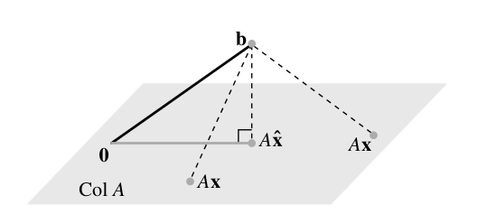
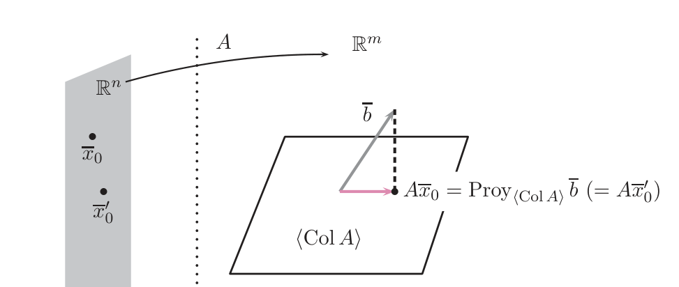
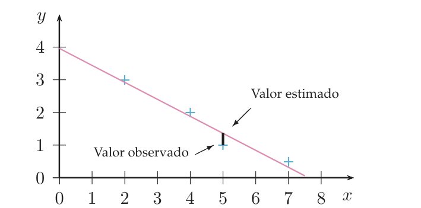
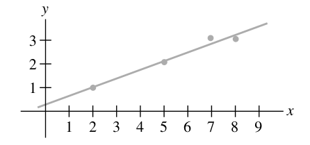

Mínimos cuadrados
Cuando un sistema $AX=B$ no tiene solución (lo normal con datos medidos), no te rindes: buscas la mejor solución aproximada, la que deja el vector $AX$ lo más cerca posible de $B$. Verás que eso es una proyección ortogonal (tema 5.1), que se calcula con las ecuaciones normales $A^tAX=A^tB$ o con la factorización $QR$ (tema 5.2), y cómo ajustar una recta, una parábola o un plano a una nube de puntos.
0Antes de empezar U p.225-226
Mides tres veces dos magnitudes y los resultados se contradicen: por ejemplo, la báscula dice que $x$ pesa $1$, que $y$ pesa $1$ y que juntos pesan $3$. El sistema $x=1,\ y=1,\ x+y=3$ no tiene solución. Pero no vas a dejar de pesar: querrás los valores $(x,y)$ que menos contradigan a las tres medidas. Eso es una solución por mínimos cuadrados: la $X$ que hace lo más pequeño posible el «fallo» $\|AX-B\|$. Geométricamente es la proyección ortogonal de $B$ sobre el conjunto de vectores que $A$ sabe fabricar (el subespacio generado por sus columnas), y el fallo mínimo es la distancia de $B$ a ese subespacio. Ya sabes calcular proyecciones (tema 5.1); aquí aprendes a convertir un sistema de ecuaciones en una de ellas.
U p.225-226 propioQué necesitas saber ya
- Del tema 5.1 (imprescindible): proyección ortogonal de un vector sobre un subespacio, el residuo $v-\operatorname{Proy}_Uv\perp U$ y el teorema de mejor aproximación (Teor. 5.4, U p.213): el punto de $U$ más cercano a $v$ es su proyección. Todo este tema es ese teorema aplicado a $U=$ «lo que genera $A$».
- Del tema 5.2: la factorización $A=QR$ ($Q$ con columnas ortonormales, $R$ triangular superior) y que $Q^tQ=I$.
- Del tema 1.4: sistema compatible/incompatible por rangos (Rouché-Frobenius) y sistemas por Gauss o Cramer; del 1.2: traspuesta, $(AB)^t=B^tA^t$.
- Del tema 2.2 y 3.2: $Ax=x_1C_1+\dots+x_nC_n$ es una combinación lineal de las columnas; subespacio generado por las columnas y núcleo $\operatorname{Nuc}A$.
- Producto escalar estándar de $\mathbb R^n$: todo el tema lo usa ($u\cdot v=u^tv$).
Mapa del tema
| Apartado | Qué contiene | Dónde |
|---|---|---|
| 1 El problema | Error cuadrático, solución por mínimos cuadrados, interpretación geométrica, animación 3D | U p.226-230 · L p.360 · E 5.35 |
| 2 Ecuaciones normales | $A^tAX=A^tB$, caracterizaciones, ejemplos U 5.36-5.38 | U p.228-231 · L Teor. 13 p.361 · E 5.37 |
| 3 ¿Es única? | Columnas independientes ⇔ $A^tA$ regular; si no, $x_p+\operatorname{Nuc}A$ (U Ej. 5.39) | U p.229-232 · L Teor. 14 p.363 · E 5.39 |
| 4 Con la factorización QR | $RX=Q^tB$ y por qué; U Ej. 5.40 | U p.232-233 · L Teor. 15 p.365 · E 5.38 |
| 5 Modelos lineales | Recta, parábola y plano de mínimos cuadrados, animación 2D, pronósticos | U p.233-238 · L §6.6 p.368-371 · E 5.40-5.43 |
| 6 Tabla Lay ↔ U | Vocabulario y alcance | L |
| 7 Ejercicios del libro | E 5.34–5.44 (con 3 errores de E corregidos) + 5 ejemplos propios + autoevaluación | E pp.191-200 · U p.239 |
| 8 Ejemplos de examen | Feb. 2023, Feb. 2019, Sept. 2018, Feb. 2020, y la pregunta de teoría (Feb. 2017 y Feb. 2018) | X |
| 9 Chuleta | Fórmulas con hipótesis, lista de comprobación, errores frecuentes | — |
(a) Calcular el error cuadrático de un $X_0$ dado (Feb. 2019, E 5.35). (b) Hallar la solución por mínimos cuadrados con las ecuaciones normales (Feb. 2023, E 5.37) o escribirlas (Sept. 2018). (c) Hacerlo con la factorización QR que te dan (Feb. 2020, E 5.38). (d) Sistemas con columnas dependientes y describir el conjunto de soluciones (E 5.39). (e) Ajustar recta, parábola o plano y hacer un pronóstico (E 5.40-5.43). (f) Explicar «en qué consiste el método de mínimos cuadrados y cómo se halla su solución» (Feb. 2017, Feb. 2018) y verdadero/falso (E 5.36, 5.44). Aparece en 6 de los 24 exámenes de 2017-2026 (el último, Feb. 2023); cuando sale es un cálculo corto: bien preparado, son puntos «baratos».
propio- «Error cuadrático» en U es una norma, no su cuadrado: $\|Ax_0-b\|$ (Def. 5.14). El nombre viene de que esa norma es la raíz de una suma de cuadrados (nota al margen de U p.226). Si en un ejercicio sale $20$, el error es $\sqrt{20}$.
- Mayúscula o minúscula. U escribe $AX=B$ cuando usa matrices columna y $Ax=b$ cuando usa vectores de $\mathbb R^m$ y $\mathbb R^n$: es lo mismo (U p.226). Aquí se usan ambas.
- «$\operatorname{Col}A$» en U es el sistema de columnas de $A$ y $\langle\operatorname{Col}A\rangle$ es el subespacio que generan. Lay llama $\operatorname{Col}A$ al subespacio. Aquí uso $\langle\operatorname{Col}A\rangle$ como U; «$C_1,\dots,C_n$» son las columnas.
- Letras de Lay: la solución se llama $\hat x$ («x gorro») en Lay y $x_0$ en U; Lay escribe la recta como $y=\beta_0+\beta_1x$ con columnas $(1,x_i)$ y U como $y=mx+n$ con columnas $(x_i,1)$ (sección 6).
- Todo con el producto escalar estándar. Con otro producto escalar (matriz de Gram $G\neq I$) las ecuaciones normales serían otras: no entra en este tema.
1El problema: un sistema sin solución y la mejor aproximación U p.226-228 L p.360
Multiplicar $A$ por un vector $x$ es mezclar las columnas de $A$: $Ax=x_1C_1+\dots+x_nC_n$. Si $A$ es de $3\times2$, todo lo que $A$ puede fabricar son combinaciones de dos vectores de $\mathbb R^3$: un plano que pasa por el origen, $\langle\operatorname{Col}A\rangle$. Resolver $Ax=b$ es preguntar «¿está $b$ en ese plano?». Si $b$ se sale del plano, no hay solución. Entonces, el mejor «sustituto» es el punto del plano más cercano a $b$: el pie de la plomada que bajas desde $b$ hasta el plano. Ese punto es $\operatorname{Proy}_{\langle\operatorname{Col}A\rangle}b$ (tema 5.1) y la $x_0$ que lo fabrica es la solución por mínimos cuadrados.
El error cuadrático cometido al sustituir $x_0\in\mathbb R^n$ en el sistema $Ax=b$ es $\|Ax_0-b\|$, la distancia entre lo que sale ($Ax_0$) y lo que se quería ($b$).
U p.227$A=\begin{pmatrix}1&2\\2&-1\\3&3\end{pmatrix}$, $B=\begin{pmatrix}1\\2\\-3\end{pmatrix}$, y sustituimos $X=\begin{pmatrix}4\\2\end{pmatrix}$.
- Calcula $AX$ (fila por columna): $AX=\begin{pmatrix}1\cdot4+2\cdot2\\2\cdot4-1\cdot2\\3\cdot4+3\cdot2\end{pmatrix}=\begin{pmatrix}8\\6\\18\end{pmatrix}$.
- Réstale $B$: $AX-B=(8-1,\ 6-2,\ 18+3)=(7,4,21)$.
- Norma: $\|(7,4,21)\|=\sqrt{49+16+441}=\sqrt{506}\approx22{,}5$. Es un error enorme: $X=(4,2)$ es una muy mala aproximación. ¿Cuál es la mejor? Se responde en la sección 2 (la solución es $X_0=(\frac5{23},-\frac{18}{23})$, con error $\frac{6\sqrt{115}}{23}\approx2{,}80$: ocho veces menor).
Una solución por mínimos cuadrados de $Ax=b$ es un $x_0\in\mathbb R^n$ que minimiza el error cuadrático: $$\|Ax_0-b\|\le\|Ax-b\|\quad\text{para todo }x\in\mathbb R^n,$$ es decir, $x_0$ resuelve el problema de optimización $\displaystyle\min_{x\in\mathbb R^n}\|Ax-b\|$.
Si $Ax=b$ sí es compatible, sus soluciones exactas tienen error $0$, el menor posible, y por tanto son soluciones por mínimos cuadrados (y las únicas). La definición solo aporta algo nuevo cuando el sistema es incompatible.
U p.227 L p.360Como los vectores $Ax$ recorren exactamente el subespacio $\langle\operatorname{Col}A\rangle$, el Teorema 5.4 (U p.213) dice que el $Ax$ más cercano a $b$ es la proyección: una solución por mínimos cuadrados es una $x_0$ con $$Ax_0=\operatorname{Proy}_{\langle\operatorname{Col}A\rangle}b,\qquad\text{y el residuo }b-Ax_0\ \perp\ \langle\operatorname{Col}A\rangle.$$ El error mínimo es la distancia de $b$ al subespacio, $\|b-\operatorname{Proy}b\|$.
U p.228, 213 L p.361
Sistema $\begin{pmatrix}1&0\\1&0\\0&1\end{pmatrix}\begin{pmatrix}x_1\\x_2\end{pmatrix}=\begin{pmatrix}1\\0\\-5\end{pmatrix}$.
- ¿Incompatible? $\operatorname{rang}A=2$ y la ampliada $\left(\begin{array}{cc|c}1&0&1\\1&0&0\\0&1&-5\end{array}\right)$ tiene rango $3$ (la 1.ª y la 2.ª fila piden $x_1=1$ y $x_1=0$). Rouché-Frobenius: incompatible.
- El plano. $\langle\operatorname{Col}A\rangle=\langle(1,1,0),(0,0,1)\rangle$: los vectores $(a,a,c)$. Las dos columnas son ortogonales ($1\cdot0+1\cdot0+0\cdot1=0$), así que se puede proyectar con la fórmula de Fourier (U (5.2), p.212).
- Proyección: $\operatorname{Proy}b=\frac{b\cdot(1,1,0)}{2}(1,1,0)+\frac{b\cdot(0,0,1)}{1}(0,0,1)=\frac12(1,1,0)-5(0,0,1)=\left(\frac12,\frac12,-5\right)$.
- Resolver $Ax=\operatorname{Proy}b$ (este sistema sí es compatible): $x_1=\frac12,\ x_2=-5$. Solución por mínimos cuadrados: $x_0=\left(\frac12,-5\right)$, única porque las columnas son independientes.
- Error (Ej. 5.38 de U): $Ax_0-b=\left(\frac12,\frac12,-5\right)-(1,0,-5)=\left(-\frac12,\frac12,0\right)$, de norma $\sqrt{\frac12}\approx0{,}707$. Es la distancia de $b$ al plano.
Creer que «mínimos cuadrados» es resolver el sistema ignorando ecuaciones, o resolver las ecuaciones por parejas y promediar. Nada de eso: se minimiza el fallo conjunto $\|Ax-b\|$ en todas las ecuaciones a la vez. En el ejemplo, la solución $\left(\frac12,-5\right)$ no cumple la primera ecuación ($x_1=1$) ni la segunda ($x_1=0$): reparte el fallo entre las dos ($\frac12$ cada una).
2Las ecuaciones normales: cómo se calcula U p.228-229 L p.361
El residuo $b-Ax_0$ tiene que ser perpendicular al plano. Un vector es perpendicular a un plano si y solo si es perpendicular a cada vector que lo genera, es decir, a cada columna. Escribir «el residuo es perpendicular a la columna $C_i$» es $C_i^t(b-Ax_0)=0$. Apilando las $n$ condiciones, las filas $C_i^t$ forman justamente la matriz $A^t$, y queda una sola ecuación matricial. Y esa ecuación ya no habla de proyecciones: es un sistema de ecuaciones normal y corriente, de $n$ ecuaciones con $n$ incógnitas.
De $C_i^t(B-AX_0)=0$ para $i=1,\dots,n$ se obtiene $A^t(B-AX_0)=0$, o sea $$\boxed{A^tA\,X=A^tB}\qquad\text{(ecuaciones normales de }AX=B).$$ Son equivalentes (U p.229):
- $x_0$ es solución por mínimos cuadrados, es decir, $\|Ax-b\|$ es mínimo para $x=x_0$.
- $b-Ax_0$ es ortogonal a $\langle\operatorname{Col}A\rangle$ (a todas las columnas).
- $X_0$ es solución de $A^tAX=A^tB$.
- $x_0$ es solución de $Ax=\operatorname{Proy}_{\langle\operatorname{Col}A\rangle}b$.
La solución por mínimos cuadrados siempre existe (el sistema $Ax=\operatorname{Proy}b$ siempre es compatible). El vector $Ax_0=\operatorname{Proy}b$ es único; la $x_0$ puede no serlo (sección 3).
U p.228-229 L Teor. 13 p.361El elemento $(i,j)$ de $A^tA$ es el producto escalar de la columna $C_i$ por la columna $C_j$; el $i$-ésimo de $A^tB$ es $C_i\cdot B$. Así $A^tA$ es simétrica ($C_i\cdot C_j=C_j\cdot C_i$) y su diagonal son las normas al cuadrado. Si $A$ es $m\times n$, $A^tA$ es $n\times n$ y $A^tB$ es $n\times1$ (da igual cuántas ecuaciones había).
propio$A=\begin{pmatrix}1&0\\1&0\\0&1\end{pmatrix}$, $B=\begin{pmatrix}1\\0\\-5\end{pmatrix}$ (el de la sección 1).
- Columnas: $C_1=(1,1,0)$, $C_2=(0,0,1)$. $C_1\cdot C_1=2$, $C_1\cdot C_2=0$, $C_2\cdot C_2=1$ $\Rightarrow$ $A^tA=\begin{pmatrix}2&0\\0&1\end{pmatrix}$.
- $C_1\cdot B=1+0+0=1$, $C_2\cdot B=-5$ $\Rightarrow$ $A^tB=\begin{pmatrix}1\\-5\end{pmatrix}$.
- Sistema $\begin{pmatrix}2&0\\0&1\end{pmatrix}\begin{pmatrix}x_1\\x_2\end{pmatrix}=\begin{pmatrix}1\\-5\end{pmatrix}$: $2x_1=1,\ x_2=-5$. Misma solución, $\left(\frac12,-5\right)$, sin haber proyectado nada.
- Comprobación (caracterización 2): el residuo $B-AX_0=\left(\frac12,-\frac12,0\right)$ es ortogonal a $C_1$ ($\frac12-\frac12=0$) y a $C_2$ ($0$) ✓.
Para $A=\begin{pmatrix}1&2\\2&-1\\3&3\end{pmatrix}$, $B=\begin{pmatrix}1\\2\\-3\end{pmatrix}$ (U Ej. 5.35):
- $A^tA=\begin{pmatrix}1+4+9&2-2+9\\9&4+1+9\end{pmatrix}=\begin{pmatrix}14&9\\9&14\end{pmatrix}$, $A^tB=\begin{pmatrix}1+4-9\\2-2-9\end{pmatrix}=\begin{pmatrix}-4\\-9\end{pmatrix}$.
- $\det=196-81=115$. Cramer: $x_1=\dfrac{-4\cdot14+9\cdot9}{115}=\dfrac{25}{115}=\dfrac5{23}$, $x_2=\dfrac{14\cdot(-9)+9\cdot4}{115}=\dfrac{-90}{115}=-\dfrac{18}{23}$.
- Error: $AX_0=\left(\frac{5-36}{23},\frac{10+18}{23},\frac{15-54}{23}\right)=\frac1{23}(-31,28,-39)$; $AX_0-B=\frac1{23}(-54,-18,30)$, de norma $\frac{\sqrt{2916+324+900}}{23}=\frac{\sqrt{4140}}{23}=\frac{6\sqrt{115}}{23}\approx2{,}80$ (frente a $22{,}5$ del $X=(4,2)$ de antes).
- $AA^t$ en lugar de $A^tA$. Para $A$ de $3\times2$, $A^tA$ es $2\times2$ (el tamaño de las incógnitas) y $AA^t$ es $3\times3$ y singular.
- Multiplicar solo el lado izquierdo por $A^t$: hay que multiplicar ambos miembros: $A^tAX=A^t\,B$.
- Resolver el sistema original «quitando» una ecuación. Eso no minimiza nada; da una solución exacta de un subsistema.
- Pensar que las normales pueden ser incompatibles: siempre tienen solución (aunque $AX=B$ no).
3¿Es única? Columnas independientes y dependientes U p.229-232 L p.363
Para $A$ de $m\times n$ son equivalentes:
- La solución por mínimos cuadrados de $Ax=b$ es única (para cada $b$).
- Las columnas de $A$ son linealmente independientes ($\operatorname{rang}A=n$).
- $A^tA$ es regular (invertible).
En tal caso $x_0=(A^tA)^{-1}A^tb$ (fórmula de Lay, útil sobre todo cuando $A^tA$ es $2\times2$ o para teoría; en la práctica se resuelve el sistema).
U p.229 L Teor. 14 p.363Si $A^tAx=0$, multiplica por $x^t$: $x^tA^tAx=(Ax)^t(Ax)=\|Ax\|^2=0$, luego $Ax=0$. O sea $\operatorname{Nuc}(A^tA)=\operatorname{Nuc}A$. Si las columnas son independientes, $Ax=0$ solo tiene la solución $x=0$, así que $A^tA$ (cuadrada) solo anula al $0$: es regular. Y viceversa. Además, si $x_0$ y $x_0'$ son dos soluciones de las normales, $A^tA(x_0-x_0')=0$, así que $x_0-x_0'\in\operatorname{Nuc}A$.
Consecuencia práctica: si las columnas son dependientes, el conjunto de soluciones por mínimos cuadrados es $x_p+\operatorname{Nuc}A$ (una solución particular de las normales más el núcleo de $A$): una variedad afín de dimensión $n-\operatorname{rang}A$. En general no es un subespacio: pasa por el origen solo si $A^tB=0$ (es decir, $b\perp$ columnas) y entonces es exactamente $\operatorname{Nuc}A$.
propio
$A=\begin{pmatrix}1&1&0&0\\0&2&0&1\\2&2&0&0\end{pmatrix}$, $B=\begin{pmatrix}5\\0\\0\end{pmatrix}$.
- Incompatible y no única. La 3.ª fila es el doble de la 1.ª, así que $\operatorname{rang}A=2$; la ampliada tiene rango $3$ (la 1.ª y la 3.ª fila piden $x_1+x_2=5$ y $2x_1+2x_2=0$). Como $\operatorname{rang}A=2<4=n$, las columnas son dependientes: la solución por mínimos cuadrados no es única.
- Ecuaciones normales: $A^tA=\begin{pmatrix}5&5&0&0\\5&9&0&2\\0&0&0&0\\0&2&0&1\end{pmatrix}$, $A^tB=\begin{pmatrix}5\\5\\0\\0\end{pmatrix}$ (la columna 3 de $A$ es nula: fila y columna de ceros).
- Resolver: $5x_1+5x_2=5\Rightarrow x_1=1-x_2$; y $5x_1+9x_2+2x_4=5\Rightarrow5(1-x_2)+9x_2+2x_4=5\Rightarrow4x_2+2x_4=0\Rightarrow x_4=-2x_2$. La 3.ª ecuación es $0=0$ ($x_3$ libre), la 4.ª ($2x_2+x_4=0$) repite la anterior. Poniendo $x_2=\lambda$, $x_3=\mu$: $$(x_1,x_2,x_3,x_4)=(1-\lambda,\ \lambda,\ \mu,\ -2\lambda)=\underbrace{(1,0,0,0)}_{x_p}+\lambda(-1,1,0,-2)+\mu(0,0,1,0).$$
- Es $x_p+\operatorname{Nuc}A$: $\operatorname{Nuc}A$ se obtiene de $x_1+x_2=0,\ 2x_2+x_4=0$: $\langle(-1,1,0,-2),(0,0,1,0)\rangle$, de dimensión $4-2=2$ ✓.
- Mismo error para todas (U): $A(1,0,0,0)=A(1,0,2,0)=(1,0,2)$, y $\|(1,0,2)-(5,0,0)\|=\|(-4,0,2)\|=\sqrt{20}\approx4{,}47$.
Contestar «la solución es…» con una sola solución cuando $A^tA$ es singular. Si las normales salen compatibles indeterminadas, hay que dar todas las soluciones (con parámetros), y decir que $AX_0$ y el error son los mismos para todas. Y no confundas: el sistema $AX=B$ incompatible y las normales con infinitas soluciones son cosas distintas (las normales siempre son compatibles).
4Con la factorización $QR$ U p.232-233 L Teor. 15 p.365
Las ecuaciones normales exigen multiplicar $A^tA$, que puede ser engorroso (y numéricamente delicado, avisa Lay en p.364). Si ya tienes $A=QR$ (tema 5.2), $Q$ tiene columnas ortonormales: la proyección sobre $\langle\operatorname{Col}Q\rangle$ es trivial y el sistema que queda es triangular, que se resuelve de abajo arriba sin invertir nada.
Si $A=QR$ (con $Q^tQ=I$, $R$ triangular superior regular), la solución por mínimos cuadrados de $AX=B$ es la del sistema triangular $$\boxed{R\,X=Q^tB}.$$
Por qué. Las normales son $A^tAX=A^tB$. Con $A=QR$: $A^tA=R^tQ^tQR=R^tR$ y $A^tB=R^tQ^tB$. Queda $R^tRX=R^tQ^tB$; como $R^t$ es regular, se cancela: $RX=Q^tB$. Así que da la misma solución que las normales, y es única (las columnas de $A$ son independientes: si no, no habría $QR$ con $R$ regular, U p.218).
Aviso de Lay: la solución es $\hat x=R^{-1}Q^tb$, pero «se debería calcular como la solución exacta de $Rx=Q^tb$», por sustitución regresiva, en vez de invertir $R$.
U p.232, 218 L Teor. 15 p.365$A=QR$ con $Q=\begin{pmatrix}\frac1{\sqrt2}&\frac1{\sqrt2}\\\frac1{\sqrt2}&-\frac1{\sqrt2}\\0&0\end{pmatrix}$, $R=\begin{pmatrix}1&1\\0&1\end{pmatrix}$, y $B=\begin{pmatrix}1\\1\\1\end{pmatrix}$.
- Producto de $Q^t$ por $B$ (cada columna de $Q$ por $B$): $q_1\cdot B=\frac1{\sqrt2}+\frac1{\sqrt2}=\sqrt2$, $q_2\cdot B=\frac1{\sqrt2}-\frac1{\sqrt2}=0$. Luego $Q^tB=(\sqrt2,0)^t$.
- Sistema triangular $RX=Q^tB$: $\ x+y=\sqrt2,\ \ y=0$.
- Sustitución regresiva: $y=0$; $x=\sqrt2$. Solución: $X=(\sqrt2,0)^t$.
- Qué ha pasado. $A=QR=\begin{pmatrix}\frac1{\sqrt2}&\sqrt2\\\frac1{\sqrt2}&0\\0&0\end{pmatrix}$ tiene la 3.ª fila nula: la 3.ª ecuación es $0=1$ y el sistema es incompatible. $AX=(1,1,0)$ es la proyección de $(1,1,1)$ sobre el plano $z=0$, y el error es $1$.
Escribir $X=R^{-1}Q^tB$ e invertir $R$ (más cuentas, más fallos), o usar «$Q^{-1}$»: $Q$ es $m\times n$ con $m>n$, no es cuadrada, solo cumple $Q^tQ=I$ (no $QQ^t=I$); solo si $m=n$ $Q$ es ortogonal y el sistema es compatible. Y si el enunciado dice «por la factorización $QR$», hacerlo por las normales no puntúa (el examen de Feb. 2020 avisa: «lo que se realiza por otra vía distinta a la pedida no se puntúa»); úsalas solo como comprobación.
5Modelos lineales: ajustar una recta, una parábola o un plano U p.233-238 L p.368-371
Tienes datos medidos $(x_i,y_i)$ que casi parecen alineados, pero no del todo. Quieres la recta $y=mx+n$ que mejor los describa. Si esa recta pasara por todos los puntos se cumpliría $mx_i+n=y_i$ para cada $i$: un sistema con una ecuación por dato y solo dos incógnitas, $m$ y $n$. Casi siempre es incompatible, y la solución por mínimos cuadrados es la recta que hace mínima la suma de los cuadrados de los errores verticales $e_i=y_i-(mx_i+n)$. Ojo con los papeles: las incógnitas son $m$ y $n$; los $x_i,y_i$ son datos (números), y van en la matriz $A$ y en $B$.
La recta $y=mx+n$ que mejor se aproxima a los puntos observados $\{(x_i,y_i)\}_{i=1}^N$ mediante mínimos cuadrados (minimiza $\sum e_i^2$, con $e_i=|mx_i+n-y_i|$) es la recta de mínimos cuadrados. Se obtiene resolviendo por mínimos cuadrados $$\underbrace{\begin{pmatrix}x_1&1\\x_2&1\\\vdots&\vdots\\x_N&1\end{pmatrix}}_{A}\begin{pmatrix}m\\n\end{pmatrix}=\underbrace{\begin{pmatrix}y_1\\y_2\\\vdots\\y_N\end{pmatrix}}_{B},\qquad A^tA=\begin{pmatrix}\sum x_i^2&\sum x_i\\\sum x_i&N\end{pmatrix},\quad A^tB=\begin{pmatrix}\sum x_iy_i\\\sum y_i\end{pmatrix}.$$ Tiene solución única si hay al menos dos valores distintos de $x_i$ (así las columnas $(x_i)$ y $(1,\dots,1)$ son independientes). La solución es $$m=\frac{N\sum x_iy_i-\sum x_i\sum y_i}{N\sum x_i^2-\left(\sum x_i\right)^2},\qquad n=\frac{\sum x_i^2\sum y_i-\sum x_i\sum x_iy_i}{N\sum x_i^2-\left(\sum x_i\right)^2}.$$
U p.233 L p.368-369 propioPuntos $(2,3),(4,2),(5,1),(7,\tfrac12)$.
- Sumas ($N=4$): $\sum x=18$, $\sum x^2=4+16+25+49=94$, $\sum y=\frac{13}2$, $\sum xy=6+8+5+\frac72=\frac{45}2$.
- Normales $A^tAX=A^tB$: $\begin{pmatrix}94&18\\18&4\end{pmatrix}\begin{pmatrix}m\\n\end{pmatrix}=\begin{pmatrix}45/2\\13/2\end{pmatrix}$. $\det=376-324=52$.
- Resolver: $m=\dfrac{4\cdot\frac{45}2-18\cdot\frac{13}2}{52}=\dfrac{90-117}{52}=-\dfrac{27}{52}$, $\ n=\dfrac{94\cdot\frac{13}2-18\cdot\frac{45}2}{52}=\dfrac{611-405}{52}=\dfrac{103}{26}$.
- Recta: $y=-\dfrac{27}{52}x+\dfrac{103}{26}$ ($\approx-0{,}52x+3{,}96$).

Si restas la media $\bar x$ a todos los $x_i$, las columnas $(x_i-\bar x)$ y $(1,\dots,1)$ pasan a ser ortogonales ($\sum(x_i-\bar x)=0$) y las normales quedan diagonales: con $x_i^*=x_i-\bar x$, $$m=\frac{\sum x_i^*\,y_i}{\sum (x_i^*)^2},\qquad n=\bar y-m\,\bar x.$$ Es especialmente cómodo con $x_i$ equiespaciados (meses, años: $x=1,\dots,5$ ⇒ $x^*=-2,-1,0,1,2$) o con valores de $y$ grandes (E 5.41). Y deja ver una propiedad útil: la recta pasa siempre por el punto de medias $(\bar x,\bar y)$.
L p.370 propio
Más allá de la recta: parábola y plano
El método sirve siempre que la función a ajustar sea una combinación lineal de funciones conocidas con coeficientes incógnita. Una parábola $y=ax^2+bx+c$ no es una recta, pero sí es lineal en $a,b,c$: cada dato da la ecuación $a\,x_i^2+b\,x_i+c=y_i$ y la matriz tiene una fila $(x_i^2,\ x_i,\ 1)$ por dato. Con tres variables, un plano $z=ax+by+c$ tiene filas $(x_i,\ y_i,\ 1)$. Todo lo demás (normales, unicidad, error) es idéntico; solo cambia cuántas columnas tiene $A$.
| Modelo | Incógnitas | Fila de $A$ por dato | Dato en $B$ |
|---|---|---|---|
| Recta $y=mx+n$ | $m,n$ | $(x_i,\ 1)$ | $y_i$ |
| Parábola $y=ax^2+bx+c$ | $a,b,c$ | $(x_i^2,\ x_i,\ 1)$ | $y_i$ |
| Plano $z=ax+by+c$ | $a,b,c$ | $(x_i,\ y_i,\ 1)$ | $z_i$ |
U ajusta el porcentaje $y$ de alumnos que aprobaron alguna asignatura de Ingeniería en cada semestre (de 2007 a 2009), con $x=1,\dots,6$; el pronóstico $x=10$ corresponde al 2.º semestre de 2011. Datos: $(1;0{,}20),(2;0{,}25),(3;0{,}35),(4;0{,}15),(5;0{,}30),(6;0{,}45)$.
- $N=6$, $\sum x=21$, $\sum x^2=91$, $\sum y=1{,}7$, $\sum xy=6{,}55$. Normales: $\begin{pmatrix}91&21\\21&6\end{pmatrix}\begin{pmatrix}m\\n\end{pmatrix}=\begin{pmatrix}6{,}55\\1{,}7\end{pmatrix}$, $\det=546-441=105$.
- $m=\frac{6\cdot6{,}55-21\cdot1{,}7}{105}=\frac{3{,}6}{105}=\frac6{175}\approx0{,}0343$ y $n=\frac{91\cdot1{,}7-21\cdot6{,}55}{105}=\frac{17{,}15}{105}=\frac{49}{300}\approx0{,}1633$. U redondea a $y=0{,}03x+0{,}16$ (p.237).
- Pronóstico para $x=10$ (U, Ej. 5.43): con los coeficientes redondeados $0{,}03\cdot10+0{,}16=0{,}46$ ($46\%$). Con los coeficientes exactos: $\frac6{175}\cdot10+\frac{49}{300}=\frac{1063}{2100}\approx0{,}506$ ($50{,}6\%$). La diferencia viene solo del redondeo: no redondees antes de pronosticar.
Puntos $(x,y,z)$: $(1,-1,3),(2,3,-2),(1,1,1),(1,3,4)$. Modelo $z=ax+by+c$, filas $(x_i,y_i,1)$:
- $A=\begin{pmatrix}1&-1&1\\2&3&1\\1&1&1\\1&3&1\end{pmatrix}$, $B=\begin{pmatrix}3\\-2\\1\\4\end{pmatrix}$.
- $A^tA=\begin{pmatrix}7&9&5\\9&20&6\\5&6&4\end{pmatrix}$, $A^tB=\begin{pmatrix}4\\4\\6\end{pmatrix}$ (productos escalares de columnas).
- Resolviendo por Cramer ($\det A^tA=24$; $\Delta_a=-124$, $\Delta_b=6$, $\Delta_c=182$): $(a,b,c)=\left(-\frac{124}{24},\frac6{24},\frac{182}{24}\right)=\left(-\frac{31}6,\frac14,\frac{91}{12}\right)$, es decir, $z=-\frac{31}6x+\frac14y+\frac{91}{12}$.
- Poner mal las columnas: en la recta de U la columna de unos va a la derecha y las incógnitas son $(m,n)$; si la pones a la izquierda (como Lay), las incógnitas son $(n,m)$.
- Escribir $N=1$ (o el número de variables) en la esquina de $A^tA$: ahí va el número de datos ($\sum1=N$).
- Creer que la recta pasa por algún dato (E 5.44 D): en general no pasa por ninguno.
- Confundir ajuste con interpolación (E 5.44 C): un polinomio de grado $N-1$ pasa por los $N$ puntos (error $0$); el de mínimos cuadrados, de menor grado, no.
- Redondear coeficientes demasiado pronto: se nota en el pronóstico (ver arriba).
6Tabla Lay ↔ U: vocabulario y alcance L p.360-371
Lay explica bien esta parte (§6.5 y §6.6) y su estructura coincide con la de U. Esta tabla traduce el vocabulario; si hay diferencia, manda U.
| Concepto | U (§5.4) | Lay (§6.5-6.6) |
|---|---|---|
| Solución | $x_0$, Def. 5.15 (p.227) | $\hat x$, definición (p.360) |
| Subespacio de las columnas | $\langle\operatorname{Col}A\rangle$ (el «sistema» $\operatorname{Col}A$ es el de columnas) | $\operatorname{Col}A$ (p.360) |
| Error | «error cuadrático» $\|Ax_0-b\|$, Def. 5.14 (p.227) | «error de mínimos cuadrados» $\|b-A\hat x\|$ (Ej. 3, p.363-364) |
| Geometría | $Ax_0=\operatorname{Proy}b$ (p.228) | $A\hat x=\hat b=\operatorname{proy}_{\operatorname{Col}A}b$, ec. (1) (p.361); Figura 1 |
| Ecuaciones normales | $A^tAX=A^tB$ (p.228) | $A^TAx=A^Tb$, ec. (3); Teor. 13 (p.361) |
| Unicidad | columnas independientes ⇔ $A^tA$ regular (p.229) | Teor. 14 (p.363), con $\hat x=(A^TA)^{-1}A^Tb$ (4) |
| QR | $RX=Q^tB$ (p.232) | Teor. 15: $\hat x=R^{-1}Q^Tb$ (p.365); calcular resolviendo $Rx=Q^Tb$ |
| Recta | $y=mx+n$, filas $(x_i,1)$, «línea de mínimos cuadrados» (p.233) | $y=\beta_0+\beta_1x$, matriz de diseño $X$ con filas $(1,x_i)$, «recta de regresión» (p.368-369) |
| Residuo | $e_i=|mx_i+n-y_i|$ (p.233) | valor observado − valor predicho, con signo (p.369) |
Alcance. Lay trae además el ejemplo con $A^TA$ singular de tipo ANOVA (Ej. 2, p.362-363), el truco de columnas ortogonales (Ej. 4, p.364) y regresión múltiple y ajuste de curvas (p.371 y siguientes); aquí solo se usa lo que respalda U. Con U se pide: ecuaciones normales, QR, recta, plano y (por E) parábola.
7Ejercicios del libro, resueltos E p.190-200
Los Ejercicios 5.34 a 5.44 de E son los de esta sección (el 5.33 y anteriores, hasta la p.189, son de 5.3 y anteriores). Orden de estudio recomendado (de fácil a difícil): 5.35 → 5.36 → 5.37 → 5.40 → 5.43 → 5.38 → 5.39 → 5.41 → 5.42 → 5.44 → 5.34. Abajo están agrupados por método y, dentro de cada grupo, en el orden del libro. Pulsa «Mostrar soluciones» arriba para abrirlas todas.
- E 5.39 (p.195): E da las soluciones $(-\alpha,0,\alpha,-1)$ y dice que son «una recta de $\mathbb R^4$». No cumplen las ecuaciones normales (con $\alpha=1$, $A^tA(-1,0,1,-1)^t=(-2,-3,-2,-3)^t\neq(4,5,4,5)^t$). El conjunto correcto es $x_1=\frac25-x_3,\ x_2=\frac75-x_4$ con $x_3,x_4$ libres: un plano afín (2 parámetros), no una recta.
- E 5.41 (p.197): E da $m=-0{,}2748$, $n=101{,}5925$ e IPC $\approx99{,}1193$. Con los datos del enunciado salen $m=-0{,}0947$, $n=101{,}2323$ y IPC $\approx100{,}38$. (Además E escribe «diciembre 2012» donde debe decir diciembre 2011.)
- E 5.42 (p.198): los coeficientes $a=-0{,}8455$, $b=5{,}428$, $c=0{,}4056$ son correctos, pero la raíz positiva que da E ($6{,}461$) no lo es: con esa parábola el proyectil toca el suelo en $x\approx6{,}494$ ($f(6{,}461)\approx0{,}18\neq0$).
- E 5.37 (p.193): el valor del error es $\frac2{\sqrt3}\approx1{,}1547$ (correcto). E 5.34 (p.191): el enunciado es $v\notin U$ (el símbolo se pierde en algunas copias). E 5.44 B (p.200): debe leerse «$AX_0-B=0$». E 5.38 (p.194): la matriz del enunciado se lee mal en el texto extraído de E (aquí está leída del PDF); la solución es correcta.
Bloque I — Error cuadrático y teoría (E 5.35, 5.36, 5.44, 5.34)
Ejercicio 5.35 — error cuadrático al sustituir $X_0$ E p.192
Calcúlese el error cuadrático cometido en $AX=B$, si $A=\begin{pmatrix}2&1\\1&-2\\3&1\end{pmatrix}$ y $B=\begin{pmatrix}3\\-1\\2\end{pmatrix}$, al sustituir $X$ por $X_0=\begin{pmatrix}1\\-1\end{pmatrix}$.
- Qué me piden
- Calcular el error cuadrático cometido al sustituir un vector $X_0$.
- Cómo lo pienso
- El «error» es cuánto se aleja $AX_0$ de $B$. Se mide con el cuadrado de la norma del residuo.
- Qué uso
- Mínimos cuadrados (Def. 5.14, Teor. 5.12, U p.225): para $AX=B$ sin solución, $X_0$ minimiza $\|AX-B\|$ $\iff$ $A X_0=\operatorname{Proy}_{\operatorname{Col}A}B$ $\iff$ cumple las ecuaciones normales $A^tAX=A^tB$. Es única si las columnas de $A$ son independientes ($A^tA$ regular). El error cuadrático es $\|AX_0-B\|^2$.
- Por dónde empiezo
- Calculo $AX_0-B$ y sumo cuadrados.
- Qué se pide. Por la Definición 5.14 (U p.227), el error cuadrático es la norma de $AX_0-B$: mide «cuánto falla» $X_0$ como solución.
Calcular $AX_0$:
$$AX_0=\begin{pmatrix}2\cdot1+1\cdot(-1)\\1\cdot1+(-2)(-1)\\3\cdot1+1\cdot(-1)\end{pmatrix}=\begin{pmatrix}1\\3\\2\end{pmatrix}.$$- Restar $B$: $AX_0-B=(1-3,\ 3+1,\ 2-2)=(-2,4,0)$.
- Norma: $\sqrt{4+16+0}=\sqrt{20}=2\sqrt5\approx4{,}4721$.
Resultado: error $=2\sqrt5\approx4{,}472$.
Error típico: olvidar la raíz y dar $20$ (eso es $\|AX_0-B\|^2$). Teoría: U §5.4.2, Def. 5.14 y Ej. 5.35, p.227.
Ejercicio 5.36 — verdadero/falso: definición y unicidad E p.192
Si $A\in\mathcal M_{m\times n}$, se pide decidir si es cierto: A) La solución por mínimos cuadrados de $Ax=b$ es un vector $x_0$ tal que es solución del problema $\min_{x\in\mathbb R^n}\|Ax-b\|$. B) Si $AX=B$ es compatible determinado, la solución por mínimos cuadrados de $AX=B$ es única y es la solución de $AX=B$.
- Qué me piden
- Verdadero o falso sobre la definición y la unicidad de la solución por mínimos cuadrados.
- Cómo lo pienso
- Si el sistema ya tiene solución, el mínimo posible de $\|AX-B\|$ es $0$ y se alcanza en esa solución.
- Qué uso
- Mínimos cuadrados (Def. 5.14, Teor. 5.12, U p.225): para $AX=B$ sin solución, $X_0$ minimiza $\|AX-B\|$ $\iff$ $A X_0=\operatorname{Proy}_{\operatorname{Col}A}B$ $\iff$ cumple las ecuaciones normales $A^tAX=A^tB$. Es única si las columnas de $A$ son independientes ($A^tA$ regular). El error cuadrático es $\|AX_0-B\|^2$.
- Por dónde empiezo
- Razono con la definición.
- A) Cierto. Es literalmente la Definición 5.15 (U p.227): $x_0$ es solución por mínimos cuadrados si $\|Ax_0-b\|\le\|Ax-b\|$ para todo $x$, es decir, si $x_0$ minimiza $\|Ax-b\|$.
- B) Cierto. Sea $X_0$ la (única) solución de $AX=B$. Su error es $\|AX_0-B\|=\|0\|=0$. Como una norma nunca es negativa, $0\le\|AX-B\|$ para todo $X$: $X_0$ alcanza el mínimo y es solución por mínimos cuadrados.
- Unicidad. Si $X_1$ fuera otra solución por mínimos cuadrados, su error tendría que ser el mínimo, $0$; luego $AX_1=B$ (la única norma nula es la del vector cero). Como el sistema es compatible determinado, $X_1=X_0$. (Otra vía: compatible determinado ⇒ $\operatorname{rang}A=n$ ⇒ columnas independientes ⇒ solución por mínimos cuadrados única, U p.229.)
Error típico: pensar que la solución por mínimos cuadrados es siempre única (E 5.39). Teoría: U §5.4.2, Def. 5.15 p.227; unicidad p.229.
Ejercicio 5.44 — cinco afirmaciones sobre mínimos cuadrados E p.200
Justifíquese si son ciertas o no: A) En la práctica, al modelizar problemas reales aparecen sistemas de ecuaciones que son inconsistentes. B) Si $X_0$ es solución por mínimos cuadrados del sistema inconsistente $AX=B$, entonces $AX_0-B=0$. C) A diferencia del polinomio de mínimos cuadrados, la interpolación polinómica pasa exactamente por los puntos $(x_i,y_i)$ dados. D) Si $y=mx+n$ es la recta por mínimos cuadrados asociada a los datos $(x_i,y_i)$, entonces existe $i$ tal que $y_i=mx_i+n$. E) Si $X_1$ y $X_2$ son soluciones por mínimos cuadrados de $AX=B$, entonces $\|AX_1-B\|=\|AX_2-B\|$.
- Qué me piden
- Cinco afirmaciones sobre mínimos cuadrados.
- Cómo lo pienso
- Distingo tres cosas: sistema inconsistente (no hay solución exacta), solución por mínimos cuadrados (existe siempre) y interpolación (pasa por todos los puntos, a costa de oscilar).
- Qué uso
- Mínimos cuadrados (Def. 5.14, Teor. 5.12, U p.225): para $AX=B$ sin solución, $X_0$ minimiza $\|AX-B\|$ $\iff$ $A X_0=\operatorname{Proy}_{\operatorname{Col}A}B$ $\iff$ cumple las ecuaciones normales $A^tAX=A^tB$. Es única si las columnas de $A$ son independientes ($A^tA$ regular). El error cuadrático es $\|AX_0-B\|^2$.
- Por dónde empiezo
- Contrasto cada afirmación con la definición.
- A) Cierto. Los datos medidos tienen errores y hay más ecuaciones (observaciones) que incógnitas (parámetros): lo normal es que no haya solución exacta. Es la motivación de U §5.4 (p.225); p. ej. 5 puntos no alineados (E 5.40).
- B) Falso. Si $AX_0-B=0$, entonces $AX_0=B$ y $X_0$ sería solución exacta, contra «inconsistente». Luego $\|AX_0-B\|>0$ (en E 5.37 vale $\frac2{\sqrt3}$).
- C) Cierto. El polinomio de interpolación se define imponiendo $p(x_i)=y_i$ en todos los datos (grado $N-1$ con $N$ datos de abscisas distintas); el de mínimos cuadrados, de menor grado, solo minimiza $\sum(p(x_i)-y_i)^2$ y en general no pasa por ninguno. (La razón es la definición de interpolación; la que da E, «no minimiza el error en puntos distintos de los observados», no es el argumento.)
D) Falso. Contraejemplo: datos $(0,0),(1,1),(2,0)$. Normales
$$\begin{pmatrix}5&3\\3&3\end{pmatrix}\binom mn=\binom11$$⇒ $m=0$, $n=\frac13$: la recta $y=\frac13$ no pasa por ninguno de los tres puntos (en la animación de la sección 5, preset «E 5.44 D»).
E) Cierto. Ambas minimizan $\|AX-B\|$, y el mínimo es un único número: $\|AX_1-B\|=\|AX_2-B\|$. Más aún,
$$AX_1=AX_2=\operatorname{Proy}_{\langle\operatorname{Col}A\rangle}B$$(U p.229; ejemplo en la sección 3).
Error típico: confundir «la solución $X_0$ puede no ser única» con «el error puede ser distinto»: el error mínimo (y el vector $AX_0$) es siempre único. Teoría: U §5.4, p.225-229.
Ejercicio 5.34 — el problema $\min_{u\in U}\|v-u\|$ (frontera con 5.1) E p.191
Si $E$ es un espacio euclídeo, $U\subset E$ es un subespacio de dimensión $m$ y $v\in E$ pero $v\notin U$, se pide estudiar la solución del problema $\min_{u\in U}\|v-u\|^2$.
Idea. Es el Teorema 5.4 de U (tema 5.1) demostrado «a mano». Es la base de todo el tema: con $U=\langle\operatorname{Col}A\rangle$ y $v=b$, el $u_0$ que sale es $Ax_0$.
- Qué me piden
- Resolver el problema de mínima distancia de un vector a un subespacio.
- Cómo lo pienso
- La respuesta natural: el punto más cercano es la proyección ortogonal, y el error es perpendicular al subespacio.
- Qué uso
- Teorema de la mejor aproximación: el mínimo se alcanza en $u=\operatorname{Proy}_Uv$ y es único; $v-u\perp U$.
- Por dónde empiezo
- Descompongo $v=u+w$ con $u\in U$, $w\perp U$ y aplico Pitágoras.
- Reformular. Buscamos $u_0\in U$ con $\|v-u_0\|^2\le\|v-u\|^2$ para todo $u\in U$. Minimizar la norma o su cuadrado es lo mismo ($t\mapsto t^2$ crece para $t\ge0$).
- Coordenadas. Sea $\{u_1,\dots,u_m\}$ una base ortonormal de $U$ (existe por Gram-Schmidt, U p.207). Todo $u\in U$ es $u=\sum x_iu_i$: hay que hallar los $x_i$.
- Separar la parte de $v$ fuera de $U$. Sea $w=v-\sum_i(v\cdot u_i)u_i$. Entonces $w\cdot u_j=v\cdot u_j-(v\cdot u_j)\cdot1=0$ para cada $j$ (ortonormalidad): $w\in U^\perp$. Además $w\neq0$ porque $v\notin U$.
- Reescribir: $v-\sum x_iu_i=w+\sum_i(v\cdot u_i-x_i)u_i$. Son sumandos ortogonales dos a dos, y por Pitágoras (U p.203, repetido): $$\Big\|v-\sum x_iu_i\Big\|^2=\|w\|^2+\sum_{i=1}^m(v\cdot u_i-x_i)^2.$$
- Minimizar. $\|w\|^2$ no depende de los $x_i$ y cada sumando es $\ge0$: el mínimo se alcanza justo cuando todos son $0$, es decir, $x_i=v\cdot u_i$.
- Conclusión. Existe y es única la solución $u_0=\sum_i(v\cdot u_i)u_i=\operatorname{Proy}_U(v)$ (U p.212), y el valor mínimo es $\|w\|^2=\|v-\operatorname{Proy}_Uv\|^2$.
Error típico: aplicar $\sum(v\cdot u_i)u_i$ con una base que no es ortonormal (con base ortogonal hay que dividir por $\|u_i\|^2$, U (5.2) p.212). Teoría: U §5.1.6, Teor. 5.4 p.213 y (5.2) p.212; el tema 5.1.
Bloque II — Ecuaciones normales y QR (E 5.37, 5.38, 5.39)
Ejercicio 5.37 — mínimos cuadrados del sistema de E 5.35 y su error E p.193
Hállese la solución por mínimos cuadrados del sistema del Ejercicio 5.35 y su error cuadrático asociado.
- Qué me piden
- Solución por mínimos cuadrados del sistema del 5.35 y su error.
- Cómo lo pienso
- El sistema tiene más ecuaciones que incógnitas: seguramente incompatible. Las ecuaciones normales dan la mejor aproximación.
- Qué uso
- Mínimos cuadrados (Def. 5.14, Teor. 5.12, U p.225): para $AX=B$ sin solución, $X_0$ minimiza $\|AX-B\|$ $\iff$ $A X_0=\operatorname{Proy}_{\operatorname{Col}A}B$ $\iff$ cumple las ecuaciones normales $A^tAX=A^tB$. Es única si las columnas de $A$ son independientes ($A^tA$ regular). El error cuadrático es $\|AX_0-B\|^2$.
- Por dónde empiezo
- Formo $A^tA$ y $A^tB$, resuelvo y calculo el residuo.
¿Incompatible? Ampliada
$$\left(\begin{array}{cc|c}2&1&3\\1&-2&-1\\3&1&2\end{array}\right):$$$\det=2(-4+1)-1(2+3)+3(1+6)=-6-5+21=10\neq0$. El rango de la ampliada es $3$ y el de $A$, a lo sumo $2$: incompatible. Por eso tiene sentido buscar una solución aproximada.
- ¿Única? Las columnas $(2,1,3)$ y $(1,-2,1)$ no son proporcionales ⇒ independientes ⇒ $A^tA$ regular y solución por mínimos cuadrados única (U p.229).
Ecuaciones normales (productos escalares de columnas):
$$A^tA=\begin{pmatrix}4+1+9&2-2+3\\3&1+4+1\end{pmatrix}=\begin{pmatrix}14&3\\3&6\end{pmatrix},$$ $$A^tB=\begin{pmatrix}6-1+6\\3+2+2\end{pmatrix}=\begin{pmatrix}11\\7\end{pmatrix}.$$- Resolver $14x_1+3x_2=11,\ 3x_1+6x_2=7$. $\det=84-9=75$. Cramer: $x_1=\frac{66-21}{75}=\frac35$, $x_2=\frac{98-33}{75}=\frac{13}{15}$.
- Error. $AX_0=\left(\frac{31}{15},-\frac{17}{15},\frac83\right)$, $AX_0-B=\left(-\frac{14}{15},-\frac2{15},\frac23\right)$, $$\|AX_0-B\|=\sqrt{\tfrac{196+4+100}{225}}=\sqrt{\tfrac43}=\tfrac2{\sqrt3}=\tfrac{2\sqrt3}3\approx1{,}1547.$$
- Comprobación (caracterización 2 de U p.229): el residuo $B-AX_0=\left(\frac{14}{15},\frac2{15},-\frac23\right)$ es ortogonal a las columnas: $\frac{28+2-30}{15}=0$ y $\frac{14-4-10}{15}=0$ ✓. Y $1{,}1547<4{,}472$ (error de E 5.35), como debe ser: $X_0=(1,-1)$ era peor.
Resultado: $X_0=\left(\frac35,\frac{13}{15}\right)^t$, error $\frac2{\sqrt3}$.
Error típico: resolver $AX=B$ «quitando una ecuación», o escribir $AA^t$ (es $3\times3$ y singular) en lugar de $A^tA$. Teoría: U §5.4.2, p.228-229.
Ejercicio 5.38 — mínimos cuadrados con la factorización $QR$ de E 5.23 E p.194
Utilizando la factorización $QR$ del Ejercicio 5.23 (tema 5.2), se pide calcular la solución por mínimos cuadrados del sistema asociado a $\begin{pmatrix}1&0&1\\0&1&2\\-1&2&1\\0&1&1\end{pmatrix}\begin{pmatrix}x\\y\\z\end{pmatrix}=\begin{pmatrix}0\\1\\1\\1\end{pmatrix}$. (La factorización es la de la matriz $A$ de este sistema.)
Datos (E 5.23 del tema 5.2, Gram-Schmidt de las columnas de esta misma $A$): $Q=\begin{pmatrix}\frac1{\sqrt2}&\frac12&-\frac1{2\sqrt3}\\0&\frac12&\frac{\sqrt3}2\\-\frac1{\sqrt2}&\frac12&-\frac1{2\sqrt3}\\0&\frac12&-\frac1{2\sqrt3}\end{pmatrix}$, $R=\begin{pmatrix}\sqrt2&-\sqrt2&0\\0&2&\frac52\\0&0&\frac{\sqrt3}2\end{pmatrix}$.
- Qué me piden
- Resolver un problema de mínimos cuadrados con la factorización $QR$.
- Cómo lo pienso
- Con $A=QR$, las ecuaciones normales se simplifican: $R^tRX=R^tQ^tB$, es decir $RX=Q^tB$, triangular.
- Qué uso
- Mínimos cuadrados (Def. 5.14, Teor. 5.12, U p.225): para $AX=B$ sin solución, $X_0$ minimiza $\|AX-B\|$ $\iff$ $A X_0=\operatorname{Proy}_{\operatorname{Col}A}B$ $\iff$ cumple las ecuaciones normales $A^tAX=A^tB$. Es única si las columnas de $A$ son independientes ($A^tA$ regular). El error cuadrático es $\|AX_0-B\|^2$. Con $QR$: $A=QR$ da $RX=Q^tB$ (triangular superior).
- Por dónde empiezo
- Calculo $Q^tB$ y sustituyo hacia atrás.
- Incompatible. $\det(A\mid B)=-1\neq0$ (como matriz $4\times4$ la ampliada): rango $4$ frente a $\operatorname{rang}A=3$ ⇒ incompatible. Se busca la solución por mínimos cuadrados.
- Por qué vale $RX=Q^tB$ (sección 4): $A^tA=R^tR$ y $A^tB=R^tQ^tB$; se cancela $R^t$ (regular). La solución es única (columnas independientes).
Calcular $Q^tB$ (cada columna de $Q$ por $B=(0,1,1,1)$): $q_1\cdot B=-\frac1{\sqrt2}$; $q_2\cdot B=\frac12+\frac12+\frac12=\frac32$;
$$q_3\cdot B=\frac{\sqrt3}2-\frac1{2\sqrt3}-\frac1{2\sqrt3}=\frac{\sqrt3}2-\frac1{\sqrt3}=\frac1{2\sqrt3}=\frac{\sqrt3}6.$$- Sistema triangular $RX=Q^tB$: $$\begin{cases}\sqrt2\,x-\sqrt2\,y=-\frac1{\sqrt2}\\[2pt]2y+\frac52z=\frac32\\[2pt]\frac{\sqrt3}2z=\frac{\sqrt3}6\end{cases}$$
Sustitución regresiva (de abajo arriba): $z=\frac{\sqrt3/6}{\sqrt3/2}=\frac13$.
$$2y=\frac32-\frac52\cdot\frac13=\frac32-\frac56=\frac23\Rightarrow y=\frac13.$$ $$\sqrt2(x-y)=-\frac1{\sqrt2}\Rightarrow x-y=-\frac12\Rightarrow x=\frac13-\frac12=-\frac16.$$Comprobación con las normales:
$$A^tA=\begin{pmatrix}2&-2&0\\-2&6&5\\0&5&7\end{pmatrix},$$$A^tB=(-1,4,4)^t$; con $\left(-\frac16,\frac13,\frac13\right)$: $-\frac13-\frac23=-1$ ✓, $\frac13+2+\frac53=4$ ✓, $\frac53+\frac73=4$ ✓. Residuo $B-AX=\left(-\frac16,0,-\frac16,\frac13\right)$, error $\frac1{\sqrt6}\approx0{,}408$.
Resultado: $x=-\frac16,\ y=\frac13,\ z=\frac13$ (coincide con E).
Error típico: invertir $R$ o usar $Q^{-1}$ ($Q$ no es cuadrada). Teoría: U §5.4.2, p.232 (Ej. 5.40, p.232-233); QR en U §5.2.2, p.218.
Ejercicio 5.39 — columnas dependientes: conjunto de soluciones (la oficial falla) E p.195
Hállese la solución del problema de mínimos cuadrados $\begin{cases}x_1+x_2+x_3+x_4=4\\x_1+x_2+x_3+x_4=-1\\x_2+x_4=2\\x_1+x_3=1\end{cases}$ y estúdiese el conjunto obtenido en términos de espacios vectoriales.
- Qué me piden
- Conjunto de soluciones por mínimos cuadrados cuando las columnas son dependientes.
- Cómo lo pienso
- Dos columnas iguales ⇒ $A^tA$ singular: las ecuaciones normales quedan indeterminadas y las soluciones forman una recta.
- Qué uso
- Mínimos cuadrados (Def. 5.14, Teor. 5.12, U p.225): para $AX=B$ sin solución, $X_0$ minimiza $\|AX-B\|$ $\iff$ $A X_0=\operatorname{Proy}_{\operatorname{Col}A}B$ $\iff$ cumple las ecuaciones normales $A^tAX=A^tB$. Es única si las columnas de $A$ son independientes ($A^tA$ regular). El error cuadrático es $\|AX_0-B\|^2$. Columnas dependientes: $A^tA$ es singular y hay infinitas soluciones, que forman una recta/plano afín $X_p+\operatorname{Nuc}A$.
- Por dónde empiezo
- Ecuaciones normales, solución general con parámetro.
- Incompatible: las dos primeras ecuaciones piden que el mismo número $x_1+x_2+x_3+x_4$ valga $4$ y $-1$. (Rangos: $\operatorname{rang}A=2$, $\operatorname{rang}(A\mid B)=3$.)
Matrices.
$$A=\begin{pmatrix}1&1&1&1\\1&1&1&1\\0&1&0&1\\1&0&1&0\end{pmatrix},$$$B=(4,-1,2,1)^t$. Columnas: $C_1=C_3=(1,1,0,1)$, $C_2=C_4=(1,1,1,0)$: dependientes (rango $2$) ⇒ la solución por mínimos cuadrados no es única.
- Ecuaciones normales (productos escalares de columnas): $C_1\cdot C_1=3$, $C_1\cdot C_2=2$, $C_2\cdot C_2=3$; $C_1\cdot B=4-1+0+1=4$, $C_2\cdot B=4-1+2+0=5$: $$A^tA=\begin{pmatrix}3&2&3&2\\2&3&2&3\\3&2&3&2\\2&3&2&3\end{pmatrix},\ A^tB=\begin{pmatrix}4\\5\\4\\5\end{pmatrix}\ \Longrightarrow\ \begin{cases}3x_1+2x_2+3x_3+2x_4=4\\2x_1+3x_2+2x_3+3x_4=5\end{cases}$$ (las ecuaciones 3.ª y 4.ª repiten la 1.ª y la 2.ª). Hasta aquí E es correcto.
- Resolver (truco: agrupar). Las incógnitas solo aparecen como $u=x_1+x_3$ y $v=x_2+x_4$: $3u+2v=4,\ 2u+3v=5$. Restando, $u-v=-1$; sumando, $5u+5v=9$. Luego $u=\frac25$, $v=\frac75$.
- Conjunto de soluciones: $x_1=\frac25-x_3$, $x_2=\frac75-x_4$, con $x_3,x_4$ libres: $$(x_1,x_2,x_3,x_4)=\left(\tfrac25,\tfrac75,0,0\right)+\lambda(-1,0,1,0)+\mu(0,-1,0,1).$$
- En términos de espacios vectoriales. Es $x_p+\operatorname{Nuc}(A)$ con $x_p=(\frac25,\frac75,0,0)$ y $\operatorname{Nuc}A=\langle(-1,0,1,0),(0,-1,0,1)\rangle$ (dimensión $4-2=2$). Es un plano afín (variedad lineal de dimensión 2) de $\mathbb R^4$ que no es un subespacio: no contiene al $0$ (porque $A^tA\cdot0=0\neq A^tB$).
Comprobación. Todas comparten
$$Ax_0=\left(\frac95,\frac95,\frac75,\frac25\right)=\operatorname{Proy}_{\langle\operatorname{Col}A\rangle}B$$y el residuo $B-Ax_0=\left(\frac{11}5,-\frac{14}5,\frac35,\frac35\right)$ es ortogonal a $C_1$ ($\frac{11-14+3}5=0$) y a $C_2$ ($\frac{11-14+3}5=0$) ✓. Error común $\frac{\sqrt{335}}5\approx3{,}661$.
E da $(-\alpha,0,\alpha,-1)$ y dice que es «una recta de $\mathbb R^4$». Para esa familia $u=x_1+x_3=0$, $v=x_2+x_4=-1$ y $3u+2v=-2\neq4$: no son soluciones de las normales. Además el número de parámetros es $4-\operatorname{rang}(A^tA)=2$, no $1$.
Error típico: contar mal los parámetros o llamar «subespacio» al conjunto de soluciones: es una variedad afín. Teoría: U §5.4.2 p.228-229 y Ej. 5.39 (p.231-232), del mismo tipo.
Bloque III — Ajuste de datos (E 5.40–5.43)
Ejercicio 5.40 — recta por cinco puntos E p.196
Se pide calcular la recta que ajusta por mínimos cuadrados los datos $x=1,2,3,4,5$; $\ y=2,\,1{,}5,\,2{,}5,\,1,\,2$.
- Qué me piden
- Recta de mínimos cuadrados por cinco puntos.
- Cómo lo pienso
- Cada punto da una ecuación $mx_i+n=y_i$: cinco ecuaciones, dos incógnitas. La matriz tiene columnas $x_i$ y unos.
- Qué uso
- Ajuste: recta $y=mx+n$: $A$ tiene filas $(x_i,1)$, $B=(y_i)$; parábola: filas $(x_i^2,x_i,1)$; plano $z=ax+by+c$: filas $(x_i,y_i,1)$. Se resuelven las ecuaciones normales.
- Por dónde empiezo
- Formo $A$ y $B$ y resuelvo las normales.
- Modelo. Se busca $y=mx+n$. Si pasara por los $5$ puntos: $mx_i+n=y_i$, una fila $(x_i,1)$ por dato: $$\underbrace{\begin{pmatrix}1&1\\2&1\\3&1\\4&1\\5&1\end{pmatrix}}_{A}\begin{pmatrix}m\\n\end{pmatrix}=\underbrace{\begin{pmatrix}2\\1{,}5\\2{,}5\\1\\2\end{pmatrix}}_{B}.$$ Los puntos no están alineados: incompatible. Minimizar $\sum e_i^2$ (U p.233) es minimizar $\|AX-B\|^2$.
- Normales. Las columnas son independientes (los $x_i$ no son todos iguales) ⇒ solución única. Sumas: $\sum x=15$, $\sum x^2=55$, $\sum y=9$, $\sum xy=2+3+7{,}5+4+10=26{,}5$: $$A^tA=\begin{pmatrix}55&15\\15&5\end{pmatrix},\qquad A^tB=\begin{pmatrix}26{,}5\\9\end{pmatrix}.$$
Resolver. $\det=275-225=50$;
$$m=\frac{5\cdot26{,}5-15\cdot9}{50}=\frac{132{,}5-135}{50}=-\frac1{20};$$ $$n=\frac{55\cdot9-15\cdot26{,}5}{50}=\frac{495-397{,}5}{50}=\frac{39}{20}.$$- Recta: $y=-\frac1{20}x+\frac{39}{20}$. Comprobación: la 2.ª normal dice $\sum(y_i-mx_i-n)=0$: $9+\frac{15}{20}-5\cdot\frac{39}{20}=9+0{,}75-9{,}75=0$ ✓. (Con la forma centrada: $\bar x=3$, $\sum(x-3)y=-4-1{,}5+0+1+4=-0{,}5$, $\sum(x-3)^2=10$, $m=-0{,}05$ ✓.)
Resultado: $y=-0{,}05x+1{,}95$.
Error típico: poner $N=1$ en la esquina (es el número de datos, $\sum1$) o intercambiar el orden de las incógnitas entre $A$ y $X$. Teoría: U §5.4.3, Def. 5.16 y Ej. 5.41, p.233-234.
Ejercicio 5.41 — recta y pronóstico del IPC (la oficial falla) E p.197
Los datos mensuales del INE del índice general de precios al consumo (IPC) en la Comunidad de Madrid son: nov. 2011: $101{,}120$; dic. 2011: $101{,}512$; ene. 2012: $100{,}423$; feb. 2012: $100{,}567$; mar. 2012: $101{,}119$. Utilizando la línea de mínimos cuadrados asociada, estímese el IPC de julio de 2012 suponiendo que continúe la tendencia.
- Qué me piden
- Recta de mínimos cuadrados y pronóstico a medio plazo con datos mensuales.
- Cómo lo pienso
- Numero los meses $1,2,\dots$ y ajusto una recta. Luego evalúo en el mes pedido.
- Qué uso
- Ajuste: recta $y=mx+n$: $A$ tiene filas $(x_i,1)$, $B=(y_i)$; parábola: filas $(x_i^2,x_i,1)$; plano $z=ax+by+c$: filas $(x_i,y_i,1)$. Se resuelven las ecuaciones normales.
- Por dónde empiezo
- Normales y evaluación.
- Variable $x$. Numeramos los meses: nov. 2011 $\to x=1$, …, mar. 2012 $\to x=5$. Julio 2012 es $x=9$ (abr. 6, may. 7, jun. 8, jul. 9).
Sistema. Mismas $x_i$ que en E 5.40, luego
$$A^tA=\begin{pmatrix}55&15\\15&5\end{pmatrix}$$ $$A^tB=\begin{pmatrix}\sum x_iy_i\\\sum y_i\end{pmatrix}$$con $\sum y_i=504{,}741$ y
$$\sum x_iy_i=101{,}120+203{,}024+301{,}269+402{,}268+505{,}595=1513{,}276.$$Solución por Cramer ($\det=50$):
$$m=\frac{5\cdot1513{,}276-15\cdot504{,}741}{50}=\frac{7566{,}38-7571{,}115}{50}=\frac{-4{,}735}{50}=-0{,}0947.$$Atajo (centrar). $\bar x=3$:
$$\sum(x_i-3)y_i=-2(101{,}120)-101{,}512+0+100{,}567+2(101{,}119)=-0{,}947$$y $\sum(x_i-3)^2=10$ ⇒ $m=-0{,}0947$ (mismo valor, sin restar números grandes).
- $n$ de la 2.ª normal $15m+5n=\sum y_i$: $n=\bar y-3m=100{,}9482+0{,}2841=101{,}2323$.
- Recta: $y=-0{,}0947x+101{,}2323$. Pronóstico julio 2012: $y(9)=101{,}2323-0{,}8523=100{,}38$.
Resultado: IPC estimado $\approx100{,}38$ (exactos: $m=-\frac{947}{10000}$, $n=\frac{1012323}{10000}$, $y(9)=\frac{5019}{50}$).
E da $m=-0{,}2748$, $n=101{,}5925$ y $99{,}1193$. Con esos valores la 2.ª ecuación normal da $15m+5n=503{,}84\neq504{,}741=\sum y_i$: no resuelven las normales de estos datos. Además E dice «diciembre 2012» por diciembre 2011.
Error típico: numerar mal el mes objetivo (julio es $x=9$, no $8$) o restar números grandes con pocos decimales (cancelación): mejor centrar. Teoría: U §5.4.3, p.233 y Ej. 5.43 (pronóstico), p.237.
Ejercicio 5.42 — parábola y punto de impacto (la raíz oficial falla) E p.198
Los datos observados de la trayectoria de un proyectil son $x=1;\,2{,}5;\,3{,}5;\,4;\,5{,}5$ e $y=5,\,8,\,12,\,6,\,5$. Considerando que la trayectoria es parabólica, estímese mediante mínimos cuadrados dónde toca el suelo.
- Qué me piden
- Parábola de mínimos cuadrados y punto donde toca el suelo.
- Cómo lo pienso
- Con tres coeficientes $a,b,c$ y cinco puntos: sistema $5\times3$. El suelo es $y=0$: busco la raíz.
- Qué uso
- Ajuste: recta $y=mx+n$: $A$ tiene filas $(x_i,1)$, $B=(y_i)$; parábola: filas $(x_i^2,x_i,1)$; plano $z=ax+by+c$: filas $(x_i,y_i,1)$. Se resuelven las ecuaciones normales.
- Por dónde empiezo
- Normales $3\times3$ y raíz de la parábola.
- Modelo. $y=ax^2+bx+c$ es lineal en las incógnitas $a,b,c$: cada dato da $a x_i^2+b x_i+c=y_i$, fila $(x_i^2,x_i,1)$: $$\begin{pmatrix}1&1&1\\6{,}25&2{,}5&1\\12{,}25&3{,}5&1\\16&4&1\\30{,}25&5{,}5&1\end{pmatrix}\begin{pmatrix}a\\b\\c\end{pmatrix}=\begin{pmatrix}5\\8\\12\\6\\5\end{pmatrix}.$$ Incompatible (rango $A=3$, ampliada $4$). Cinco abscisas distintas ⇒ columnas independientes ⇒ solución única.
Normales (sumas de potencias de $x$):
$$A^tA=\begin{pmatrix}\sum x^4&\sum x^3&\sum x^2\\\sum x^3&\sum x^2&\sum x\\\sum x^2&\sum x&5\end{pmatrix}=\begin{pmatrix}1361{,}1875&289{,}875&65{,}75\\289{,}875&65{,}75&16{,}5\\65{,}75&16{,}5&5\end{pmatrix},$$ $$A^tB=\begin{pmatrix}449{,}25\\118{,}5\\36\end{pmatrix}.$$- Solución (exacta, con Gauss o sympy): $a=-\frac{6694}{7917}\approx-0{,}8455$, $b=\frac{14325}{2639}\approx5{,}4282$, $c=\frac{247}{609}\approx0{,}4056$. Coinciden con E.
Dónde toca el suelo: $y=0$: $-0{,}8455x^2+5{,}4282x+0{,}4056=0$,
$$x=\dfrac{-5{,}4282\pm\sqrt{5{,}4282^2+4\cdot0{,}8455\cdot0{,}4056}}{2(-0{,}8455)}=\dfrac{-5{,}4282\pm5{,}5531}{-1{,}6910}.$$Raíces: $x\approx-0{,}0739$ y $x\approx6{,}4938$.
- Elegir la raíz. El proyectil avanza hacia $x$ crecientes (datos de $x=1$ a $5{,}5$); la raíz negativa es el otro corte de la parábola completa. Toca el suelo en $x\approx6{,}494$.
E da las raíces $-0{,}07428$ y $6{,}461$. Con los mismos coeficientes, $f(6{,}461)\approx0{,}18\neq0$: el valor correcto es $\approx6{,}494$ (y $\approx-0{,}0739$).
Error típico: pensar que «parábola» no es un modelo lineal (lo es en los coeficientes), o redondear demasiado pronto. Nota de examen: E lo resuelve con Maxima (fuera de examen); en un examen se haría como en el Propio P3 (datos sencillos, normales y Gauss a mano). Teoría: U §5.4.3, p.233-237 (U trata recta y plano; la parábola es la misma idea con la columna $x_i^2$).
Ejercicio 5.43 — plano de mínimos cuadrados y estimación en $(7,8)$ E p.199
Calcúlese el plano que mejor se ajuste, por mínimos cuadrados, a los puntos $(x,y,z)=(1,3,1),(2,2,3),(3,1,-1),(5,4,2),(6,5,2)$, y estímese el valor de $z$ para $(x,y)=(7,8)$.
- Qué me piden
- Plano de mínimos cuadrados y estimación en un punto.
- Cómo lo pienso
- Plano $z=ax+by+c$: tres coeficientes y cinco puntos.
- Qué uso
- Ajuste: recta $y=mx+n$: $A$ tiene filas $(x_i,1)$, $B=(y_i)$; parábola: filas $(x_i^2,x_i,1)$; plano $z=ax+by+c$: filas $(x_i,y_i,1)$. Se resuelven las ecuaciones normales.
- Por dónde empiezo
- Filas $(x,y,1)$ y normales.
- Modelo (U p.237): $z=ax+by+c$; fila $(x_i,y_i,1)$ por punto: $$\begin{pmatrix}1&3&1\\2&2&1\\3&1&1\\5&4&1\\6&5&1\end{pmatrix}\begin{pmatrix}a\\b\\c\end{pmatrix}=\begin{pmatrix}1\\3\\-1\\2\\2\end{pmatrix}.$$ Incompatible (rango $3$ frente a $4$ de la ampliada); columnas independientes ⇒ solución única.
- Normales (productos escalares de columnas): $\sum x^2=75$, $\sum xy=3+4+3+20+30=60$, $\sum x=17$, $\sum y^2=55$, $\sum y=15$, $N=5$; $\sum xz=1+6-3+10+12=26$, $\sum yz=3+6-1+8+10=26$, $\sum z=7$: $$\begin{pmatrix}75&60&17\\60&55&15\\17&15&5\end{pmatrix}\begin{pmatrix}a\\b\\c\end{pmatrix}=\begin{pmatrix}26\\26\\7\end{pmatrix}.$$
- Resolver por Cramer ($\det A^tA=455$; $\Delta_a,\Delta_b,\Delta_c$ = determinantes con la columna correspondiente cambiada por $(26,26,7)^t$): $\Delta_a=-115$, $\Delta_b=331$, $\Delta_c=35$ ⇒ $a=-\frac{115}{455}=-\frac{23}{91}$, $b=\frac{331}{455}$, $c=\frac{35}{455}=\frac1{13}$.
Estimación en $(7,8)$:
$$z=-\frac{23}{91}\cdot7+\frac{331}{455}\cdot8+\frac1{13}=\frac{-805+2648+35}{455}=\frac{1878}{455}\approx4{,}1275.$$
Resultado: $z=-\frac{23}{91}x+\frac{331}{455}y+\frac1{13}$; $z(7,8)\approx4{,}128$.
Error típico: pensar que el plano pasa por algún punto (con más de $3$ puntos no coplanares, en general no pasa por ninguno). Teoría: U §5.4.3, p.237 (Ej. 5.44, p.237-238).
Ejemplos propios, de fácil a difícil
Propio P1 — tres medidas contradictorias: dos métodos propio
Halla la solución por mínimos cuadrados de $x=1,\ y=1,\ x+y=3$ y su error. (Es la animación 3D de la sección 1, preset «Propio P1».)
- Qué me piden
- Resolver un sistema contradictorio por dos métodos.
- Cómo lo pienso
- Tres ecuaciones en dos incógnitas: $x=1$, $y=1$, $x+y=3$ se contradicen. El mejor compromiso se obtiene de dos formas equivalentes.
- Qué uso
- Mínimos cuadrados (Def. 5.14, Teor. 5.12, U p.225): para $AX=B$ sin solución, $X_0$ minimiza $\|AX-B\|$ $\iff$ $A X_0=\operatorname{Proy}_{\operatorname{Col}A}B$ $\iff$ cumple las ecuaciones normales $A^tAX=A^tB$. Es única si las columnas de $A$ son independientes ($A^tA$ regular). El error cuadrático es $\|AX_0-B\|^2$.
- Por dónde empiezo
- Normales y proyección sobre $\operatorname{Col}A$.
- $$A=\begin{pmatrix}1&0\\0&1\\1&1\end{pmatrix},$$
$B=(1,1,3)^t$. Incompatible: de las dos primeras $x+y=2\neq3$.
Columnas independientes ⇒ solución única.
$$A^tA=\begin{pmatrix}2&1\\1&2\end{pmatrix},$$ $$A^tB=\begin{pmatrix}4\\4\end{pmatrix}.$$- $2x+y=4,\ x+2y=4$ ⇒ (restando) $x=y$; $3x=4$: $x=y=\frac43$.
- $AX_0=\left(\frac43,\frac43,\frac83\right)$; residuo $B-AX_0=\left(-\frac13,-\frac13,\frac13\right)$, ortogonal a $(1,0,1)$ y a $(0,1,1)$ ✓. Error $=\frac1{\sqrt3}$.
- Interpretación: la medida $x+y=3$ «tira» de la solución; cada ecuación falla en $\frac13$: el reparto más equilibrado posible.
Propio P2 — recta de regresión, error y pronóstico propio
Recta de mínimos cuadrados para $(0,1),(1,1),(2,2),(3,4)$; error cuadrático y pronóstico en $x=4$. (Preset «Propio P2» de la animación.)
- Qué me piden
- Recta de regresión con error y pronóstico.
- Cómo lo pienso
- Es el esquema del ajuste lineal.
- Qué uso
- Ajuste: recta $y=mx+n$: $A$ tiene filas $(x_i,1)$, $B=(y_i)$; parábola: filas $(x_i^2,x_i,1)$; plano $z=ax+by+c$: filas $(x_i,y_i,1)$. Se resuelven las ecuaciones normales.
- Por dónde empiezo
- Ecuaciones normales con datos dados.
- Filas $(x_i,1)$: $\sum x=6$, $\sum x^2=14$, $\sum y=8$, $\sum xy=0+1+4+12=17$, $N=4$.
Normales
$$\begin{pmatrix}14&6\\6&4\end{pmatrix}\binom mn=\binom{17}8;$$$\det=56-36=20$; $m=\frac{4\cdot17-6\cdot8}{20}=1$, $n=\frac{14\cdot8-6\cdot17}{20}=\frac12$.
- Recta $y=x+\frac12$. Residuos $y_i-(x_i+\frac12)$: $\frac12,-\frac12,-\frac12,\frac12$ (suman $0$ ✓); error $=\sqrt{4\cdot\frac14}=1$.
- Pronóstico: $y(4)=4{,}5$.
Propio P3 — parábola por cuatro puntos propio
Ajusta $y=ax^2+bx+c$ a $(-1,2),(0,1),(1,0),(2,3)$.
- Qué me piden
- Ajustar una parábola por cuatro puntos.
- Cómo lo pienso
- Cuatro puntos y tres coeficientes: matriz $4\times3$.
- Qué uso
- Ajuste: recta $y=mx+n$: $A$ tiene filas $(x_i,1)$, $B=(y_i)$; parábola: filas $(x_i^2,x_i,1)$; plano $z=ax+by+c$: filas $(x_i,y_i,1)$. Se resuelven las ecuaciones normales.
- Por dónde empiezo
- Normales.
Filas $(x_i^2,x_i,1)$:
$$A=\begin{pmatrix}1&-1&1\\0&0&1\\1&1&1\\4&2&1\end{pmatrix},$$$B=(2,1,0,3)^t$. Incompatible (rango $3$, ampliada $4$).
- Sumas: $\sum x^4=18$, $\sum x^3=8$, $\sum x^2=6$, $\sum x=2$, $N=4$; $\sum x^2y=2+0+0+12=14$, $\sum xy=-2+0+0+6=4$, $\sum y=6$. Normales (dividiendo por $2$): $$\begin{pmatrix}18&8&6\\8&6&2\\6&2&4\end{pmatrix}\begin{pmatrix}a\\b\\c\end{pmatrix}=\begin{pmatrix}14\\4\\6\end{pmatrix}\ \xrightarrow{\ \div2\ }\ \left(\begin{array}{ccc|c}9&4&3&7\\4&3&1&2\\3&1&2&3\end{array}\right).$$
- Gauss: de la 3.ª, $b=3-3a-2c$. En la 2.ª: $4a+3(3-3a-2c)+c=2\Rightarrow-5a-5c=-7$. En la 1.ª: $9a+4(3-3a-2c)+3c=7\Rightarrow-3a-5c=-5$. Restando, $-2a=-2$: $a=1$; $c=\frac{7-5}5=\frac25$; $b=3-3-\frac45=-\frac45$.
- $y=x^2-\frac45x+\frac25$. Residuos $B-AX=\left(-\frac15,\frac35,-\frac35,\frac15\right)$ (ortogonales a las tres columnas), error $\sqrt{\frac{20}{25}}=\frac2{\sqrt5}$.
Propio P4 — columnas dependientes: recta de soluciones propio
Halla todas las soluciones por mínimos cuadrados de $A=\begin{pmatrix}1&0&1\\0&1&1\\1&1&2\end{pmatrix}$, $B=(1,1,1)^t$.
- Qué me piden
- Soluciones por mínimos cuadrados con columnas dependientes.
- Cómo lo pienso
- La tercera columna es suma de las otras dos: no hay solución única.
- Qué uso
- Mínimos cuadrados (Def. 5.14, Teor. 5.12, U p.225): para $AX=B$ sin solución, $X_0$ minimiza $\|AX-B\|$ $\iff$ $A X_0=\operatorname{Proy}_{\operatorname{Col}A}B$ $\iff$ cumple las ecuaciones normales $A^tAX=A^tB$. Es única si las columnas de $A$ son independientes ($A^tA$ regular). El error cuadrático es $\|AX_0-B\|^2$. Columnas dependientes: $A^tA$ es singular y hay infinitas soluciones, que forman una recta/plano afín $X_p+\operatorname{Nuc}A$.
- Por dónde empiezo
- Normales y recta de soluciones.
- $C_3=C_1+C_2$ ⇒ $\operatorname{rang}A=2$ ⇒ no hay solución única (U p.229) y $A^tA$ es singular.
- Incompatible: en $(A\mid B)$, $F_3-F_1-F_2$ da $(0\ 0\ 0\mid-1)$.
Normales:
$$A^tA=\begin{pmatrix}2&1&3\\1&2&3\\3&3&6\end{pmatrix},$$ $$A^tB=\begin{pmatrix}2\\2\\4\end{pmatrix}.$$La 3.ª ecuación es suma de las dos primeras. De $2x_1+x_2+3x_3=2$ y $x_1+2x_2+3x_3=2$: restando, $x_1=x_2$; luego $3x_1+3x_3=2$.
- Soluciones: $(x_1,x_2,x_3)=\left(\frac23,\frac23,0\right)+t(-1,-1,1)$, $t\in\mathbb R$: una recta afín $=x_p+\operatorname{Nuc}A$, con $\operatorname{Nuc}A=\langle(-1,-1,1)\rangle$.
Todas dan el mismo
$$AX=\left(\frac23,\frac23,\frac43\right)=\operatorname{Proy}B$$y el mismo error $\frac1{\sqrt3}$ (residuo $(\frac13,\frac13,-\frac13)$).
Método geométrico (U p.229):
$$\langle\operatorname{Col}A\rangle=\langle(1,0,1),(0,1,1)\rangle$$es el plano $x+y-z=0$, de normal $n=(1,1,-1)$.
$$\operatorname{Proy}B=B-\frac{B\cdot n}{\|n\|^2}n=(1,1,1)-\frac13(1,1,-1)=\left(\frac23,\frac23,\frac43\right)$$✓. Después se resuelve el sistema compatible $Ax=\operatorname{Proy}B$.
Propio P5 — mínimos cuadrados con $QR$ calculada a mano propio
$A=\begin{pmatrix}1&0\\1&1\\1&1\\1&0\end{pmatrix}$, $B=(1,2,4,3)^t$. Halla la $QR$ de $A$ y la solución por mínimos cuadrados con $RX=Q^tB$.
- Qué me piden
- Mínimos cuadrados con $QR$ calculada a mano.
- Cómo lo pienso
- Primero Gram-Schmidt sobre las dos columnas; luego el sistema triangular.
- Qué uso
- Mínimos cuadrados (Def. 5.14, Teor. 5.12, U p.225): para $AX=B$ sin solución, $X_0$ minimiza $\|AX-B\|$ $\iff$ $A X_0=\operatorname{Proy}_{\operatorname{Col}A}B$ $\iff$ cumple las ecuaciones normales $A^tAX=A^tB$. Es única si las columnas de $A$ son independientes ($A^tA$ regular). El error cuadrático es $\|AX_0-B\|^2$. Con $QR$: $A=QR$ da $RX=Q^tB$ (triangular superior).
- Por dónde empiezo
- $Q$, $R$, $RX=Q^tB$.
- Gram-Schmidt: $\|a_1\|=2$, $q_1=\frac12(1,1,1,1)$. $a_2\cdot q_1=1$; $e_2=a_2-q_1=\left(-\frac12,\frac12,\frac12,-\frac12\right)$, $\|e_2\|=1$, $q_2=e_2$.
- $$R=Q^tA=\begin{pmatrix}q_1\cdot a_1&q_1\cdot a_2\\0&q_2\cdot a_2\end{pmatrix}=\begin{pmatrix}2&1\\0&1\end{pmatrix}.$$
- $Q^tB=\left(\frac{1+2+4+3}2,\ \frac{-1+2+4-3}2\right)=(5,1)$.
- $RX=Q^tB$: $y=1$; $2x+1=5\Rightarrow x=2$. Solución $(2,1)$.
Comprobación con normales:
$$A^tA=\begin{pmatrix}4&2\\2&2\end{pmatrix},$$$A^tB=(10,6)^t$: $8+2=10$ ✓, $4+2=6$ ✓. Residuo $B-AX=(-1,-1,1,1)$ (ortogonal a $C_1$ y a $C_2$), error $2$.
Autoevaluación de U (p.239) que corresponde a este tema
Cuestión 10 — «La solución de un sistema $AX=B$ mediante mínimos cuadrados está relacionada con la proyección de un vector sobre un subespacio» U p.239
Determínese si es verdadera la afirmación.
- Qué me piden
- Relación entre mínimos cuadrados y proyección ortogonal.
- Cómo lo pienso
- $AX_0$ es el punto de $\operatorname{Col}A$ más cercano a $B$: la proyección.
- Qué uso
- Mínimos cuadrados (Def. 5.14, Teor. 5.12, U p.225): para $AX=B$ sin solución, $X_0$ minimiza $\|AX-B\|$ $\iff$ $A X_0=\operatorname{Proy}_{\operatorname{Col}A}B$ $\iff$ cumple las ecuaciones normales $A^tAX=A^tB$. Es única si las columnas de $A$ son independientes ($A^tA$ regular). El error cuadrático es $\|AX_0-B\|^2$.
- Por dónde empiezo
- Razono con la definición.
Verdadera. $x_0$ es solución por mínimos cuadrados si y solo si
$$Ax_0=\operatorname{Proy}_{\langle\operatorname{Col}A\rangle}b$$(U p.229): se proyecta $b$ sobre el subespacio generado por las columnas y después se resuelve el sistema compatible $Ax=\operatorname{Proy}b$. Las ecuaciones normales no son más que «el residuo es ortogonal al subespacio».
Las demás cuestiones de la autoevaluación de ese capítulo son de 5.1 (1-5, 7, 8), 5.2 (6) y 5.3 (9).
8Ejemplos de examen X
De los 24 exámenes escaneados (feb. 2017 – feb. 2026 y sept. 2017–2025), seis ejercicios tienen como contenido principal este tema: Feb. 2017 (2.ª sem.), Feb. 2018 (B), Sept. 2018 (A), Feb. 2019 (A), Feb. 2020 (B) y Feb. 2023 (1.ª sem.). Se agrupan por método. En la mayoría (Feb. 2018, Sept. 2018, Feb. 2019, Feb. 2020) el examen avisa de que «lo que no se justifica o se realiza por otra vía distinta a la pedida no se puntúa»: modela escribir el razonamiento, no solo el número. Las soluciones oficiales son breves y aquí se desarrollan; las matrices de Feb. 2020 y Feb. 2023 se han reconstruido del texto escaneado (consistentes con los resultados oficiales) y todo está verificado con sympy.
- Feb. 2020 (B), problema, apartado a) — factorización $QR$ de $A=\begin{pmatrix}\frac1{\sqrt2}&\sqrt2\\\frac1{\sqrt2}&0\\0&0\end{pmatrix}$ (es la $A$ del apartado b de esta sección): tema 5.2, #ex-feb20b-pa.
- Feb. 2022 (A), problema, apartado b) — «$A$ ortogonal de $m\times n$ ⇒ $AX=B$ es compatible determinado o incompatible»: tema 1.4, #ex-feb22pb (contenido de 5.2).
Método A — Ecuaciones normales y error cuadrático
Feb. 2023 (1.ª semana), pregunta 8 (2 puntos) — mínimos cuadrados de $AX=B$ incompatible X Feb. 2023 (1.ª) P8
Sean $A=\begin{pmatrix}2&1\\1&2\\1&1\end{pmatrix}$ y $B=\begin{pmatrix}2\\0\\-3\end{pmatrix}$. El sistema $AX=B$ es incompatible. Aplique el método de mínimos cuadrados para obtener el $X=\begin{pmatrix}x_1\\x_2\end{pmatrix}$ que hace mínima la distancia de $AX$ a $B$.
- Qué me piden
- Mínimos cuadrados de un sistema incompatible $3\times2$.
- Cómo lo pienso
- Tres ecuaciones y dos incógnitas.
- Qué uso
- Mínimos cuadrados (Def. 5.14, Teor. 5.12, U p.225): para $AX=B$ sin solución, $X_0$ minimiza $\|AX-B\|$ $\iff$ $A X_0=\operatorname{Proy}_{\operatorname{Col}A}B$ $\iff$ cumple las ecuaciones normales $A^tAX=A^tB$. Es única si las columnas de $A$ son independientes ($A^tA$ regular). El error cuadrático es $\|AX_0-B\|^2$.
- Por dónde empiezo
- Normales y resolución.
Comprobar lo que dice el enunciado.
$$\det(A\mid B)=\left|\begin{array}{cc|c}2&1&2\\1&2&0\\1&1&-3\end{array}\right|=2(-6)-1(-3)+2(-1)=-11\neq0$$⇒ rango de la ampliada $3>\operatorname{rang}A$ ⇒ incompatible.
- Qué se minimiza. «La distancia de $AX$ a $B$» es $\|AX-B\|$: la Def. 5.15 (U p.227). Su solución es la de las ecuaciones normales (U p.228-229).
- Unicidad. Las columnas $(2,1,1)$ y $(1,2,1)$ no son proporcionales ⇒ independientes ⇒ $A^tA$ regular y solución única (U p.229).
Normales $A^tAX=A^tB$:
$$A^tA=\begin{pmatrix}4+1+1&2+2+1\\5&1+4+1\end{pmatrix}=\begin{pmatrix}6&5\\5&6\end{pmatrix},$$ $$A^tB=\begin{pmatrix}4+0-3\\2+0-3\end{pmatrix}=\begin{pmatrix}1\\-1\end{pmatrix}.$$- Resolver $6x_1+5x_2=1,\ 5x_1+6x_2=-1$: restando, $x_1-x_2=2$; sumando, $11(x_1+x_2)=0$. Luego $x_1=1$, $x_2=-1$.
- Comprobación: $AX=(1,-1,0)$, residuo $B-AX=(1,1,-3)$, ortogonal a $(2,1,1)$ ($2+1-3=0$ ✓) y a $(1,2,1)$ ($1+2-3=0$ ✓). Distancia mínima $\sqrt{11}$.
Resultado: $X=(1,-1)^t$ (coincide con la oficial).
Teoría: U §5.4.2, p.227-229. Igual que E 5.37. Puedes ver este caso en la animación 3D de la sección 1 (preset «Feb. 2023 (A) ej. 8»).
Feb. 2019 (tipo A), ejercicio 5 — error cuadrático al sustituir un $X$ X Feb. 2019 (A) ej. 5
Calcular el error cuadrático cometido en $AX=B$ al sustituir $X$ por $\begin{pmatrix}1\\2\end{pmatrix}$, siendo $A=\begin{pmatrix}1&2\\2&-1\\3&3\end{pmatrix}$ y $B=\begin{pmatrix}1\\2\\-3\end{pmatrix}$.
- Qué me piden
- Error cuadrático al sustituir un $X$ dado.
- Cómo lo pienso
- Es cuánto falla ese $X$.
- Qué uso
- Mínimos cuadrados (Def. 5.14, Teor. 5.12, U p.225): para $AX=B$ sin solución, $X_0$ minimiza $\|AX-B\|$ $\iff$ $A X_0=\operatorname{Proy}_{\operatorname{Col}A}B$ $\iff$ cumple las ecuaciones normales $A^tAX=A^tB$. Es única si las columnas de $A$ son independientes ($A^tA$ regular). El error cuadrático es $\|AX_0-B\|^2$.
- Por dónde empiezo
- Residuo y suma de cuadrados.
- Definición (U Def. 5.14, p.227): el error es $\|AX-B\|$. No hay que minimizar nada: solo evaluar.
$AX$:
$$\begin{pmatrix}1\cdot1+2\cdot2\\2\cdot1-1\cdot2\\3\cdot1+3\cdot2\end{pmatrix}=\begin{pmatrix}5\\0\\9\end{pmatrix}.$$- $AX-B$: $(5-1,\ 0-2,\ 9+3)=(4,-2,12)$.
- Norma: $\sqrt{4^2+(-2)^2+12^2}=\sqrt{164}=2\sqrt{41}\approx12{,}8$. (La oficial indica que basta dejarlo sin desarrollar, al no haber calculadora, y remite al Ejemplo 5.35 de U.)
Resultado: error $=\sqrt{164}=2\sqrt{41}$.
Ampliación (propia). ¿Cuánto podría mejorarse? La solución por mínimos cuadrados de este sistema es $X_0=\left(\frac5{23},-\frac{18}{23}\right)$ (sección 2) y su error es $\frac{6\sqrt{115}}{23}\approx2{,}80$: el $X=(1,2)$ del examen es unas cuatro veces y media peor.
Error típico: dar $164$ (sin raíz) o equivocar el signo con el $-3$ de $B$ ($9-(-3)=12$, no $6$). Teoría: U Def. 5.14 y Ej. 5.35, p.227; E 5.35.
Sept. 2018 (tipo A), ejercicio 5 — escribir las ecuaciones normales X Sept. 2018 (A) ej. 5
Escribir las ecuaciones normales asociadas al sistema $AX=B$ que sirven para hallar su solución por mínimos cuadrados. (Es una pregunta de teoría: sin matrices concretas.)
La oficial dice solo «las ecuaciones normales son $A^tAX=A^tB$». Con la advertencia de que lo que no se justifica no se puntúa, conviene argumentar. Modelo de respuesta, en pasos:
- Qué me piden
- Escribir las ecuaciones normales.
- Cómo lo pienso
- El residuo del mínimo es perpendicular a las columnas de $A$.
- Qué uso
- Mínimos cuadrados (Def. 5.14, Teor. 5.12, U p.225): para $AX=B$ sin solución, $X_0$ minimiza $\|AX-B\|$ $\iff$ $A X_0=\operatorname{Proy}_{\operatorname{Col}A}B$ $\iff$ cumple las ecuaciones normales $A^tAX=A^tB$. Es única si las columnas de $A$ son independientes ($A^tA$ regular). El error cuadrático es $\|AX_0-B\|^2$.
- Por dónde empiezo
- Impongo $A^t(AX-B)=0$.
Si $A\in\mathcal M_{m\times n}$, $Ax=x_1C_1+\dots+x_nC_n$ recorre $\langle\operatorname{Col}A\rangle$. La solución por mínimos cuadrados $x_0$ hace mínima $\|Ax-b\|$, y por el Teorema 5.4 (U p.213) esto ocurre cuando
$$Ax_0=\operatorname{Proy}_{\langle\operatorname{Col}A\rangle}b,$$es decir, cuando $b-Ax_0$ es ortogonal a $\langle\operatorname{Col}A\rangle$.
- Ortogonal a $\langle\operatorname{Col}A\rangle$ ⇔ ortogonal a cada columna: $C_i^t(B-AX_0)=0$ para $i=1,\dots,n$. Como las $C_i^t$ son las filas de $A^t$: $A^t(B-AX_0)=0$.
- Ecuaciones normales: $\boxed{A^tAX=A^tB}$. Es un sistema $n\times n$, siempre compatible; tiene solución única si y solo si las columnas de $A$ son independientes ($A^tA$ regular), U p.229.
Teoría: U §5.4.2, p.228-229.
Método B — Mínimos cuadrados con la factorización $QR$
Feb. 2020 (tipo B), problema, apartado b) (1,5 puntos) — $RX=Q^tB$ X Feb. 2020 (B) pb. b)
a) (1,5 ptos.) Hallar la factorización $QR$ de $A=\begin{pmatrix}\frac1{\sqrt2}&\sqrt2\\\frac1{\sqrt2}&0\\0&0\end{pmatrix}$. b) (1,5 ptos.) Resolver el siguiente problema de mínimos cuadrados $AX=B$ siendo $A$ la matriz del apartado a) y $B=\begin{pmatrix}1\\1\\1\end{pmatrix}$. (El apartado a) es del tema 5.2; se resume lo necesario.)
- Qué me piden
- Resolver $RX=Q^tB$ para un problema de mínimos cuadrados.
- Cómo lo pienso
- Sistema triangular por la factorización.
- Qué uso
- Mínimos cuadrados (Def. 5.14, Teor. 5.12, U p.225): para $AX=B$ sin solución, $X_0$ minimiza $\|AX-B\|$ $\iff$ $A X_0=\operatorname{Proy}_{\operatorname{Col}A}B$ $\iff$ cumple las ecuaciones normales $A^tAX=A^tB$. Es única si las columnas de $A$ son independientes ($A^tA$ regular). El error cuadrático es $\|AX_0-B\|^2$. Con $QR$: $A=QR$ da $RX=Q^tB$ (triangular superior).
- Por dónde empiezo
- Hacia atrás.
QR del apartado a) (resumen; detalle en 5.2): Gram-Schmidt sobre $a_1=\left(\frac1{\sqrt2},\frac1{\sqrt2},0\right)$, $a_2=(\sqrt2,0,0)$. $\|a_1\|=1\Rightarrow q_1=a_1$. $a_2\cdot q_1=1$, $e_2=a_2-q_1=\left(\frac1{\sqrt2},-\frac1{\sqrt2},0\right)$, $\|e_2\|=1\Rightarrow q_2=e_2$.
$$R=Q^tA=\begin{pmatrix}1&1\\0&1\end{pmatrix}.$$- Incompatible: la tercera ecuación es $0\cdot x+0\cdot y=1$. Por eso se pide mínimos cuadrados.
- Por qué se usa $RX=Q^tB$: $A^tA=R^tR$, $A^tB=R^tQ^tB$, $R^t$ regular (sección 4; U p.232). Y el enunciado pide «el problema de mínimos cuadrados con la $QR$ de a)»: hay que usarla.
- $Q^tB$: $q_1\cdot B=\frac2{\sqrt2}=\sqrt2$, $q_2\cdot B=0$.
- Sistema triangular: $x+y=\sqrt2,\ y=0$ ⇒ $y=0$, $x=\sqrt2$.
- Interpretación: $AX=(1,1,0)$ es la proyección de $(1,1,1)$ sobre $\langle\operatorname{Col}A\rangle$, que es el plano $z=0$; el residuo $(0,0,1)$ es perpendicular a ese plano ✓. Error $=1$.
Comprobación con las normales (solo como control):
$$A^tA=\begin{pmatrix}1&1\\1&2\end{pmatrix},$$$A^tB=(\sqrt2,\sqrt2)^t$ ⇒ $x+y=\sqrt2$, $x+2y=\sqrt2$ ⇒ $y=0$, $x=\sqrt2$ ✓.
Resultado: $X=(\sqrt2,0)^t$ (coincide con la oficial y con el Ejemplo 5.40 de U, que usa la misma $Q$, $R$ y $B$).
Teoría: U §5.4.2, p.232 (Ej. 5.40, p.232-233); U §5.2.2, p.218. Hace pareja con E 5.38 y con el Propio P5.
Método C — Explicar en qué consiste el método de mínimos cuadrados
Feb. 2018 (tipo B), problema c) y Feb. 2017 (2.ª sem.), problema b) — «explicar en qué consiste el método y cómo se halla la solución» X Feb. 2018 (B) pb. c) · Feb. 2017 pb. b)
Feb. 2018 (B): «Explicar en qué consiste el método de los mínimos cuadrados (0,5 ptos.) y decir cómo se halla su solución (0,5 ptos.).» Feb. 2017: «Explicar en qué consiste el problema de los mínimos cuadrados y presentar cómo se puede obtener una solución por mínimos cuadrados (1 pto.).» Las dos soluciones oficiales son «véase la bibliografía básica / la teoría».
Modelo de respuesta (resumen de todo el tema, en cinco pasos):
- Qué me piden
- Explicar el problema de mínimos cuadrados y cómo se obtiene la solución.
- Cómo lo pienso
- Se trata de proyectar $B$ sobre el espacio columna.
- Qué uso
- Mínimos cuadrados (Def. 5.14, Teor. 5.12, U p.225): para $AX=B$ sin solución, $X_0$ minimiza $\|AX-B\|$ $\iff$ $A X_0=\operatorname{Proy}_{\operatorname{Col}A}B$ $\iff$ cumple las ecuaciones normales $A^tAX=A^tB$. Es única si las columnas de $A$ son independientes ($A^tA$ regular). El error cuadrático es $\|AX_0-B\|^2$.
- Por dónde empiezo
- Describo ecuaciones normales.
- Planteamiento. Si $AX=B$ es incompatible (caso habitual con datos reales: más ecuaciones que incógnitas), se busca un $x_0$ que lo resuelva «lo mejor posible»: el que minimiza el error cuadrático $\|Ax-b\|$ (Def. 5.14-5.15, U p.227). El nombre viene de que la norma es la raíz de una suma de cuadrados.
Geometría. Como $Ax$ recorre $\langle\operatorname{Col}A\rangle$, por el teorema de mejor aproximación (U p.213)
$$Ax_0=\operatorname{Proy}_{\langle\operatorname{Col}A\rangle}b$$y $b-Ax_0$ es ortogonal a cada columna de $A$.
- Ecuaciones normales. Eso equivale a $A^tAX=A^tB$, que siempre tiene solución; es única si y solo si las columnas de $A$ son independientes (⇔ $A^tA$ regular); si no, hay infinitas ($x_p+\operatorname{Nuc}A$) y todas dan el mismo $Ax_0$ y el mismo error (U p.229).
- Cómo se calcula. (a) Resolver las normales; (b) proyectar $b$ sobre $\langle\operatorname{Col}A\rangle$ y resolver $Ax=\operatorname{Proy}b$; (c) si $A=QR$, resolver el sistema triangular $RX=Q^tB$ (U p.232).
Aplicación y ejemplo breve. Recta $y=mx+n$ de mínimos cuadrados a los datos $(x_i,y_i)$ (U p.233). Ejemplo: $x=1,\ y=1,\ x+y=3$ (Propio P1):
$$A^tA=\begin{pmatrix}2&1\\1&2\end{pmatrix},$$$A^tB=\binom44$ ⇒ $x=y=\frac43$, error $\frac1{\sqrt3}$.
Error típico: contestar solo «$A^tAX=A^tB$» sin decir qué se minimiza ni por qué son esas las ecuaciones. Teoría: U §5.4.2, p.226-232.
Para practicar — fronteras con otros temas (no se desarrollan aquí)
- 5.1 Proyección ortogonal sobre un subespacio (es el primer paso del método geométrico: $Ax_0=\operatorname{Proy}b$): Sept. 2017 (A1) ej. 5 (proyección de $(1,0,-5)$ sobre $\langle(1,1,0),(0,0,1)\rangle$: es el U Ej. 5.36 de la sección 1); Sept. 2025 p.4 (la proyección de $(2,0,-3)$ sobre el mismo subespacio); Feb. 2020 (B) ej. 5 (proyección de $(1,1,1)$ sobre $2x+y-z=0$); Sept. 2024 p.5 (en $\mathbb R^4$ con base ortogonal).
- 5.2: Feb. 2020 (B) pb. a) (la $QR$ que se usa en B); 1.4: Feb. 2022 (A) pb. b).
- 6.2-6.3: la forma cuadrática $x^t(A^tA)x=\|Ax\|^2$ es siempre semidefinida positiva: es lo que hay detrás de «$A^tA$ regular ⇔ columnas independientes» y se retoma en el tema 6.
9Chuleta, lista de comprobación y errores frecuentes
| Qué | Fórmula | Hipótesis / aviso |
|---|---|---|
| Error cuadrático | $\|Ax_0-b\|$ (Def. 5.14) | Es la norma, no su cuadrado; producto escalar estándar |
| Solución por mínimos cuadrados | $x_0$ con $\|Ax_0-b\|\le\|Ax-b\|$ para todo $x$ (Def. 5.15) | Siempre existe. Si $AX=B$ es compatible, son sus soluciones exactas (error $0$) |
| Geometría | $Ax_0=\operatorname{Proy}_{\langle\operatorname{Col}A\rangle}b$; $b-Ax_0\perp$ cada columna | Teor. 5.4. El vector $Ax_0$ y el error son únicos |
| Ecuaciones normales | $A^tAX=A^tB$ ($n\times n$) | Siempre compatible. $(A^tA)_{ij}=C_i\cdot C_j$, $(A^tB)_i=C_i\cdot B$ |
| Unicidad | solución única ⇔ columnas independientes ⇔ $A^tA$ regular; entonces $x_0=(A^tA)^{-1}A^tb$ | Si no: $x_0\in x_p+\operatorname{Nuc}A$ (variedad afín de dimensión $n-\operatorname{rang}A$; en general no es subespacio: lo es, $=\operatorname{Nuc}A$, solo si $A^tB=0$) |
| Con $QR$ | $A=QR\Rightarrow RX=Q^tB$ (regresiva) | Columnas de $A$ independientes; $Q^tQ=I$ pero $Q$ no es cuadrada |
| Error mínimo | $\|b-Ax_0\|^2=\|b\|^2-\|Ax_0\|^2$ (Pitágoras) | Porque $Ax_0\perp b-Ax_0$ (útil para comprobar) |
| Recta $y=mx+n$ | filas $(x_i,1)$; $\begin{pmatrix}\sum x^2&\sum x\\\sum x&N\end{pmatrix}\binom mn=\binom{\sum xy}{\sum y}$ | Al menos dos $x_i$ distintos. $\sum e_i=0$, $\sum x_ie_i=0$; pasa por $(\bar x,\bar y)$ |
| Parábola / plano | filas $(x_i^2,x_i,1)$ / $(x_i,y_i,1)$ | Lineal en los coeficientes. Solución única ⇔ columnas independientes (parábola: al menos 3 abscisas distintas; plano: puntos no alineados en $(x,y)$). Con más datos que incógnitas el sistema suele ser incompatible |
| Ajuste vs interpolación | $N$ puntos ⇒ polinomio de grado $N-1$ pasa por todos | El de mínimos cuadrados (menor grado) en general no pasa por ninguno |
- Calcular el error cuadrático de un $X_0$ dado (producto, resta, norma) (E 5.35; X Feb. 2019).
- Explicar por qué una solución por mínimos cuadrados es una proyección y por qué el residuo es ortogonal a las columnas (E 5.34; sección 1).
- Escribir y justificar las ecuaciones normales $A^tAX=A^tB$ (X Sept. 2018) y resolverlas con $A^tA$ de $2\times2$ y $3\times3$ (E 5.37; X Feb. 2023).
- Comprobar el resultado: $A^t(B-AX_0)=0$ y que el error baja respecto de otro $X$.
- Decidir si la solución es única (columnas independientes) y, si no, dar el conjunto $x_p+\operatorname{Nuc}A$ con sus parámetros (E 5.39; Propio P4).
- Resolver con la $QR$: $Q^tB$ y sustitución regresiva (E 5.38; X Feb. 2020; Propio P5).
- Ajustar una recta, una parábola o un plano y hacer un pronóstico (E 5.40–5.43; Propios P2-P3); centrar los $x$ para ahorrar cuentas.
- Contestar verdadero/falso sobre mínimos cuadrados con la definición y la caracterización de la unicidad (E 5.36, 5.44).
- Explicar «en qué consiste el método y cómo se halla la solución» con ejemplo (X Feb. 2017, Feb. 2018).
- Detectar los errores de E (5.39, 5.41, 5.42) comprobando siempre las normales.
- Dar $\|Ax_0-b\|^2$ como error cuadrático (U define el error como la norma, con raíz).
- $AA^t$ en lugar de $A^tA$, o multiplicar por $A^t$ solo un miembro.
- Dar una sola solución cuando $A^tA$ es singular: hay infinitas ($x_p+\operatorname{Nuc}A$); el error es el mismo para todas.
- Llamar «subespacio» al conjunto de soluciones cuando hay infinitas: es una variedad afín $x_p+\operatorname{Nuc}A$ (en general no es subespacio; pasa por el origen solo si $A^tB=0$, y entonces es $\operatorname{Nuc}A$) (E 5.39).
- Invertir $R$ o $Q$ en el método $QR$ ($Q$ no es cuadrada); o resolver por normales cuando el enunciado pide la $QR$.
- En la recta: $N=1$ en la esquina de $A^tA$, intercambiar el orden de $(m,n)$ entre $A$ y $X$, o numerar mal el instante de un pronóstico.
- Redondear coeficientes antes de pronosticar (U Ej. 5.43: $0{,}46$ frente a $0{,}506$).
- Pensar que la recta de mínimos cuadrados pasa por algún dato (E 5.44 D) o que el plano pasa por tres de los puntos.
- Fiarse de la solución oficial de E en 5.39, 5.41 y 5.42: están mal; comprueba con las normales (la 2.ª normal de la recta dice $\sum e_i=0$).
- No justificar: «lo que no se justifica no se puntúa». Cita la definición, las normales y comprueba la ortogonalidad del residuo.